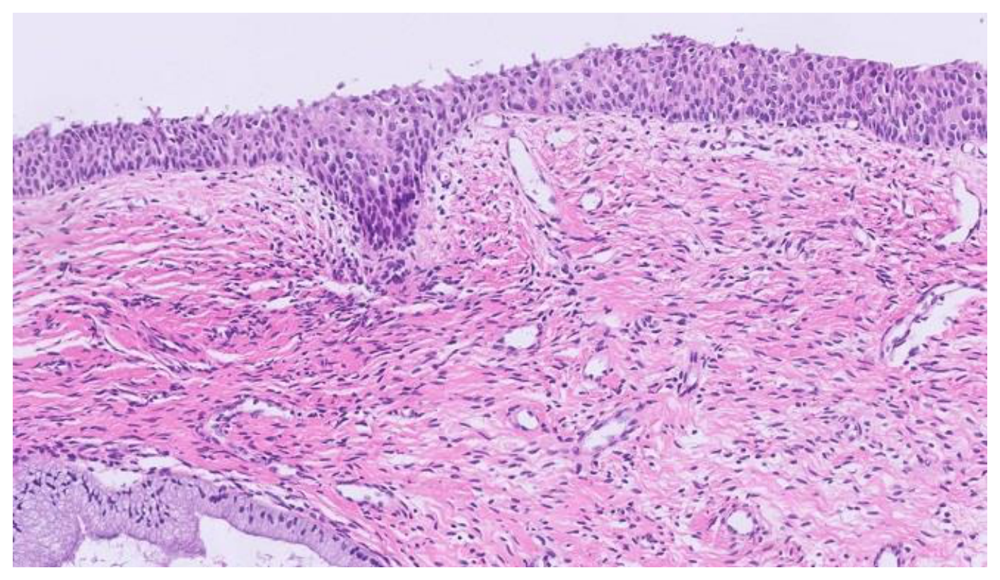

開卷有益 ／
醫師 ／ 醫學（二）（包括微生物免疫學、寄生蟲學、藥理學、病理學、公共衛生學等科目知識及其臨床之應用） ／ 114 年第 2 次114 年第 2 次醫師醫學（二）（包括微生物免疫學、寄生蟲學、藥理學、病理學、公共衛生學等科目知識及其臨床之應用）試題與答案
這一頁是民國 114 年第 2 次醫師醫學（二）（包括微生物免疫學、寄生蟲學、藥理學、病理學、公共衛生學等科目知識及其臨床之應用）的整份歷屆試題，共 100 題，題目與標準答案出自考選部「國家考試試題及測驗式試題答案」開放資料，其中 100 題附有詳解。以下逐題列出題幹、選項與答案；要計時作答或記錄成績，請用線上練習。
考選部原始場次代碼：114090
線上作答這一科 →
全部 100 題
第 1 題
下列那一種細菌是兼性厭氧菌（facultative anaerobes）？
（A） 大腸桿菌（Escherichia coli）（B） 結核桿菌（Mycobacteria tuberculosis）（C） 破傷風桿菌（Clostridium tetani）（D） 肉毒桿菌（Clostridium botulinum）答案：（A）
詳解與考點 正解：兼性厭氧菌（facultative anaerobe）可在有氧與無氧環境生長，並在有氧時以較有效率的呼吸作用獲得能量。大腸桿菌（Escherichia coli）具此特性，故選 A。
B：結核桿菌（Mycobacterium tuberculosis）為嚴格需氧菌，偏好氧分壓高的部位生長，並非兼性厭氧菌。
C、D：破傷風桿菌與肉毒桿菌皆屬梭狀芽孢桿菌，為絕對厭氧菌（obligate anaerobe）；氧氣會抑制其營養型生長，故不是兼性厭氧菌。
本題考點：兼性厭氧菌（facultative anaerobe）可有氧或無氧生長，代表為大腸桿菌；絕對需氧菌（obligate aerobe）如結核桿菌；絕對厭氧菌（obligate anaerobe）如梭狀芽孢桿菌。
第 2 題
大腸桿菌 O157:H7 常引起出血性腹瀉，H7 的 H 指的是細菌的那一部分？
（A） 鞭毛（flagella）（B） 脂多醣（lipopolysaccharide）（C） 核心多醣（core polysaccharide）（D） 莢膜（capsule）答案：（A）
詳解與考點 正解：大腸桿菌血清型 O157:H7 的字母意義。O 抗原指脂多醣的體抗原，而 H 抗原指鞭毛蛋白相關的鞭毛抗原；因此 H7 指鞭毛（flagella）抗原型，故選 A。
B：脂多醣（lipopolysaccharide）所對應的是 O 抗原，不是 H 抗原。
C：核心多醣（core polysaccharide）是脂多醣結構的一部分，但不構成 H 血清型的依據。
D：莢膜（capsule）可作為某些細菌的 K 抗原分類依據，與本題 H7 無關。
本題考點：細菌血清分型（serotyping）中，O antigen 是脂多醣體抗原；H antigen 是鞭毛抗原；K antigen 常指莢膜抗原。
第 3 題
關於鈎端螺旋體病（leptospirosis）之敘述，下列何者最不適當？
（A） 病原體是 Leptospira interrogans，為絕對嗜氧菌（obligate aerobe），容易培養（B） 雖具有主動穿透黏膜的能力，但不會透過性行為傳染（C） 通常以 doxycycline 治療或預防（D） 嚙齒類動物是主要的保菌宿主（reservoir），其帶菌的尿液會污染土壤答案：（A）
詳解與考點 正解：鈎端螺旋體雖為需氧性螺旋體，但培養並不容易。Leptospira interrogans 需特殊培養條件且生長緩慢，故 A 把「絕對嗜氧」與「容易培養」連在一起，後半敘述錯誤，為最不適當。
B：鈎端螺旋體可經皮膚破損處或黏膜進入人體；人對人、尤其性行為傳播不是其典型傳播途徑，敘述適當。
C：doxycycline 可用於鈎端螺旋體病治療，亦可在特定高暴露情境用於預防，敘述適當。
D：嚙齒類動物是重要保菌宿主（reservoir），其尿液污染水或土壤後可造成暴露，是典型流行病學途徑。
本題考點：鈎端螺旋體病（leptospirosis）常由受感染動物尿液污染的水土傳播；Leptospira interrogans 為需氧性螺旋體但培養困難；保菌宿主（reservoir）以嚙齒類為重要來源。
第 4 題
廣泛性抗藥結核桿菌（extensively drug-resistant Mycobacteria tuberculosis, XDR TB）的定義，是指多重抗藥結核桿菌（MDR TB）不只對氟喹諾酮（fluoroquinolones）具抗性，且對下列何種第二線抗生素也具抗性？
（A） 胺基糖苷（aminoglycoside）（B） 四環黴素（tetracycline）（C） beta-內酰胺（beta-lactam）（D） 紅黴素（erythromycin）答案：（A）
詳解與考點 正解：題目採用的是較早期的 XDR-TB 定義：MDR-TB 再合併對任一氟喹諾酮及至少一種第二線注射型藥物的抗性；後者包括胺基糖苷類，故依題幹定義選 A。惟現行 WHO 對 XDR-TB 的分類已改以氟喹諾酮加上 bedaquiline 或 linezolid 等關鍵藥物抗性為核心，與本題舊定義不同。
B：四環黴素不是此舊版 XDR-TB 定義所指定的第二線注射型抗結核藥物。
C：beta-內酰胺不是本題所採 XDR-TB 分類的必要抗性類別。
D：紅黴素也不是本題舊版 XDR-TB 定義所列的第二線注射型抗結核藥物。
本題考點：多重抗藥結核（multidrug-resistant tuberculosis, MDR-TB）與廣泛性抗藥結核（extensively drug-resistant tuberculosis, XDR-TB）的定義曾隨治療藥物與分類更新而改變；閱讀題目時須辨認採用的定義架構。
第 5 題
下列何種產氣莢膜梭狀芽孢桿菌（Clostridium perfringens）的毒素，主要會造成氣狀壞疽（gasgangrene）？
（A） alpha 毒素（B） beta 毒素（C） epsilon 毒素（D） iota 毒素答案：（A）
詳解與考點 正解：產氣莢膜梭狀芽孢桿菌造成氣狀壞疽的主要毒力因子。alpha 毒素具有 phospholipase C 活性，可破壞細胞膜、造成肌肉壞死與溶血，是氣狀壞疽的關鍵毒素，故選 A。
B：beta 毒素主要與壞死性腸炎等腸道病變相關，不是氣狀壞疽的主要致病毒素。
C：epsilon 毒素主要增加血管通透性，較與動物的腸毒血症相關，非本題所問。
D：iota 毒素是二元毒素，並非產氣莢膜梭狀芽孢桿菌氣狀壞疽的主要毒力因子。
本題考點：產氣莢膜梭狀芽孢桿菌（Clostridium perfringens）的 alpha toxin 為 phospholipase C，可造成細胞膜破壞、肌壞死與氣狀壞疽（gas gangrene）。
第 6 題
溶菌酶（lysozyme）為人類淚液或唾液中常見之蛋白質，具有抵禦細菌感染的功能，其預防細菌感染最主要之機制為：
（A） 破壞細菌細胞膜完整性（B） 抑制細菌電子傳遞鏈運作（C） 分解胜肽聚醣（peptidoglycan）造成細菌細胞壁損壞（D） 切割線毛（pili）使細菌無法黏附於宿主組織或細胞答案：（C）
詳解與考點 正解：溶菌酶（lysozyme）的直接受質。溶菌酶切開胜肽聚醣（peptidoglycan）骨架中 N-acetylmuramic acid 與 N-acetylglucosamine 間的鍵，使細菌細胞壁失去完整性而易裂解，故選 C。
A：破壞細胞膜完整性是補體終端複合體或部分抗菌胜肽的重要作用，不是溶菌酶的主要機制。
B：抑制電子傳遞鏈是特定抗菌藥物的作用模式，溶菌酶並不以此抑菌。
D：切割線毛不是溶菌酶作用；溶菌酶的目標是細胞壁胜肽聚醣，而非細菌附著構造。
本題考點：溶菌酶（lysozyme）是先天免疫（innate immunity）的抗菌蛋白，藉分解胜肽聚醣（peptidoglycan）破壞細菌細胞壁（cell wall）。
第 7 題
下列細菌與氧分子（O2）相關之敘述，何者最不適當？
（A） 兼性厭氧菌（facultative anaerobic bacteria）雖可在無氧條件下存活，但無法在有氧環境下生長（B） 在一般的大氣環境下，微需氧菌（microaerophilic bacteria）無法正常的生長（C） 氧分子代謝過程中產生的過氧化氫（hydrogen peroxide），為對細菌有害的代謝產物（D） 絕對厭氧菌（obligate anaerobic bacteria）產生的孢子，可在有氧的環境下留存，並在合適的環境轉變為具有生長活性之細菌答案：（A）
詳解與考點 正解：兼性厭氧菌對氧的耐受性。兼性厭氧菌可在無氧下發酵或厭氧呼吸，也能在有氧環境進行有氧呼吸，通常生長更好；A 說其無法在有氧環境生長，故最不適當。
B：微需氧菌（microaerophilic bacteria）需要低於大氣濃度的氧，在一般大氣氧濃度下會受抑制，敘述適當。
C：氧代謝可產生過氧化氫（hydrogen peroxide）等活性氧物質，若缺乏相應解毒酵素會傷害細菌，敘述適當。
D：絕對厭氧菌的營養型細胞不耐氧，但其形成的孢子可在有氧環境存留，待條件適合再萌發，敘述適當。
本題考點：兼性厭氧菌（facultative anaerobe）可有氧或無氧生長；微需氧菌（microaerophile）僅適合低氧；活性氧（reactive oxygen species）是氧暴露對細菌造成傷害的原因之一。
第 8 題
下列何種疾病最不可能經由蜱（tick）媒介傳染？
（A） 洛磯山斑疹熱（Rocky Mountain spotted fever）（B） 地方性回歸熱（Endemic relapsing fever）（C） 斑疹傷寒（Scrub typhus）（D） 萊姆病（Lyme disease）答案：（C）
詳解與考點 正解：媒介生物的辨識。斑疹傷寒（scrub typhus）由恙蟎幼蟲傳播，不是由蜱（tick）媒介；因此最不可能經蜱傳染的是 C。
A：洛磯山斑疹熱（Rocky Mountain spotted fever）由蜱傳播，與蜱媒疾病密切相關。
B：地方性回歸熱（endemic relapsing fever）可由軟蜱傳播，故仍屬可能經蜱媒介的疾病。
D：萊姆病（Lyme disease）由硬蜱傳播，是最典型的蜱媒感染之一。
本題考點：蜱媒疾病（tick-borne diseases）包括洛磯山斑疹熱、地方性回歸熱與萊姆病；恙蟲病／斑疹傷寒（scrub typhus）則由恙蟎（chigger mite）傳播。
第 9 題
下列那種感染症與無乳鏈球菌（Streptococcus agalactiae）最無關連？
（A） 新生兒腦膜炎（neonatal meningitis）（B） 新生兒肺炎（neonatal pneumonia）（C） 懷孕婦女的泌尿道感染（urinary tract infection）（D） 新生兒筋膜炎（neonatal fasciitis）答案：（D）
詳解與考點 正解：無乳鏈球菌（Streptococcus agalactiae，B 群鏈球菌）的典型感染。它常造成新生兒敗血症、肺炎與腦膜炎，也可造成孕婦泌尿道感染；新生兒筋膜炎並非其典型關聯感染，故選 D。
A：新生兒腦膜炎是 B 群鏈球菌的重要臨床表現，與本菌高度相關。
B：新生兒肺炎可見於 B 群鏈球菌早發型感染，與垂直傳播密切相關。
C：孕婦泌尿道感染可由 B 群鏈球菌引起，且孕期帶菌對新生兒感染風險有意義。
本題考點：B 群鏈球菌（group B Streptococcus, Streptococcus agalactiae）可造成新生兒敗血症、肺炎與腦膜炎，也與孕婦泌尿生殖道帶菌及感染相關；壞死性筋膜炎（necrotizing fasciitis）較典型聯想到 A 群鏈球菌。
第 10 題
下列有關病毒複製之敘述，何者最不適當？
（A） 病毒的基因體複製是在病毒結構蛋白合成之後才開始進行（B） 所有病毒複製過程中均需合成 RNA（C） B 型肝炎病毒之外套膜來自寄主細胞之細胞膜（D） 在隱蝕期（eclipse period）時可測到極少量之感染性病毒答案：（A）
詳解與考點 正解：病毒複製的時序。病毒先表現早期基因產物，以建立基因體複製所需的酵素與環境，之後才大量合成結構蛋白並組裝；A 把基因體複製說成必定在結構蛋白合成後才開始，時序顛倒，故最不適當。
B：病毒在複製過程都需要 RNA，至少須有 RNA 作為 mRNA 供宿主核糖體翻譯蛋白質；此處不是指所有病毒的基因體皆為 RNA。
C：B 型肝炎病毒的外套膜由宿主細胞膜系統提供，病毒取得宿主脂質膜後形成有外套膜病毒，敘述適當。
D：隱蝕期（eclipse period）是脫殼後至新感染性病毒顆粒出現前的階段，新生感染性病毒尚未增加至可測程度；但可能仍測得少量殘存的親代感染性病毒。因此（D）可接受，非本題最不適當的敘述。
本題考點：病毒複製（viral replication）可分早期基因表現、基因體複製、晚期結構蛋白合成與組裝；隱蝕期（eclipse period）內尚未形成可測得的完整感染性病毒顆粒。
第 11 題
下列有關致癌性病毒（oncogenic virus）的敘述，何者最適當？
（A） 多瘤病毒（polyomavirus, SV40）之 T 抗原可與寄主細胞中之腫瘤抑制蛋白結合（B） 多瘤病毒（polyomavirus, SV40）可在人類形成腫瘤（C） 乳突瘤病毒（papillomavirus）之 E7 蛋白可與寄主細胞中之 p53 蛋白結合（D） 腺病毒（adenovirus）之 E1B 可與寄主細胞中之 p105RB 蛋白結合答案：（A）
詳解與考點 正解：致癌病毒蛋白對宿主腫瘤抑制蛋白的作用。SV40 的 large T antigen 能結合並抑制 p53 與 RB 等腫瘤抑制蛋白，使細胞週期調控失常，故 A 最適當。
B：SV40 可在實驗動物與細胞模型造成腫瘤，但其在人類腫瘤中的明確致癌角色未被確立，不能直接說可在人類形成腫瘤。
C：乳突瘤病毒（papillomavirus）的 E7 主要結合 pRB；結合 p53 的主要是 E6，因此本項把兩者作用對象互換。
D：腺病毒的 E1A 主要結合 p105RB，E1B 則與 p53 路徑相關；本項同樣把病毒蛋白與宿主靶點配錯。
本題考點：病毒致癌（viral oncogenesis）常經由失活腫瘤抑制蛋白；SV40 large T antigen 可作用於 p53 與 RB；HPV E6 作用於 p53、E7 作用於 RB。
第 12 題
下列那一個肝炎病毒尚未有疫苗可預防其感染，但已經可以經由抗病毒藥物治療病患使其痊癒？
（A） HAV（B） HBV（C） HCV（D） HDV答案：（C）
詳解與考點 正解：「尚無疫苗」但「可抗病毒治療而痊癒」的組合。HCV 目前沒有可供預防感染的疫苗，但直接作用抗病毒藥物可使多數病人達到持續病毒學反應，代表病毒學治癒，故選 C。
A：HAV 雖沒有特異性抗病毒藥物可用來治癒感染，但已有有效疫苗可預防，與題幹組合不符。
B：HBV 有疫苗可預防；現有抗病毒治療多可長期抑制病毒，卻通常不能保證清除感染而痊癒。
D：HDV 感染仰賴 HBV，因此 HBV 疫苗可間接預防 HDV 感染；也不符合題幹所述組合。
本題考點：C 型肝炎病毒（hepatitis C virus, HCV）尚無疫苗但可用直接作用抗病毒藥物（direct-acting antivirals）達成治癒；B 型肝炎病毒（HBV）有疫苗，治療重點多為長期病毒抑制。
第 13 題
有關流行性感冒病毒蛋白 neuraminidase（NA）的敘述，下列何者最不適當？
（A） 為一種酵素，能幫助病毒離開宿主細胞（B） A 型流感病毒具有多種 NA 亞型（C） 為抗病毒藥物金剛烷胺類（amantadine）主要抑制對象（D） 在病毒外套膜上形成四倍體（tetramer）答案：（C）
詳解與考點 正解：流感病毒不同膜蛋白的抗病毒藥物靶點。金剛烷胺類（amantadine）阻斷的是 A 型流感病毒 M2 質子通道，不是 neuraminidase（NA），故 C 最不適當。
A：NA 是一種酵素，可切除唾液酸殘基，協助新生病毒顆粒從宿主細胞表面釋出，敘述適當。
B：A 型流感病毒具有多種 NA 亞型，這也是流感 A 分型名稱中 N 的來源，敘述適當。
D：NA 位於病毒外套膜表面，具有四聚體（tetramer）結構，敘述適當。
本題考點：流感病毒 neuraminidase（NA）促進病毒釋放，是 neuraminidase inhibitors 的靶點；M2 ion channel 是金剛烷胺類（amantadine）的靶點。
第 14 題
有關輪狀病毒（rotaviruses）的特色，下列敘述何者最不適當？
（A） 是一個雙股 RNA（double-stranded RNA）病毒（B） 被蛋白酶降解後形成的 intermediate subviral particle（ISVP）不具感染力（C） 基因體（genome）由多段的 RNA 組成（D） 對腸胃道環境的耐受性很高答案：（B）
詳解與考點 正解：輪狀病毒經蛋白酶處理後的感染性。輪狀病毒在腸道內可經蛋白酶切割外殼蛋白而形成 intermediate subviral particle（ISVP），此變化會活化病毒進入細胞的能力，ISVP 仍具感染力；B 說不具感染力，故最不適當。
A：輪狀病毒是雙股 RNA（double-stranded RNA）病毒，敘述適當。
C：輪狀病毒基因體由多段 RNA 組成，屬分節基因體病毒，敘述適當。
D：輪狀病毒對腸胃道環境有高耐受性，能存活通過胃酸與腸道環境，符合其腸胃炎傳播特性。
本題考點：輪狀病毒（rotavirus）是分節雙股 RNA 病毒；intermediate subviral particle（ISVP）由外殼蛋白酶切割形成，具有促進感染的活化特性；腸胃道耐受性有利其糞口傳播。
第 15 題
關於麻疹（Measles）的敘述，下列何者最適當？
（A） 其致病原麻疹病毒屬黏液病毒（Myxovirus）（B） 麻疹病毒之基因體為八段單股的 RNA（C） 麻疹病毒具有多種血清型（D） 病毒感染時，體內 T 細胞會攻擊被病毒感染的上皮細胞，造成病人身上的大塊紅斑（maculopapularmeasles rash）答案：（D）
詳解與考點 正解：麻疹疹子形成的免疫機轉。麻疹病毒感染上皮細胞後，宿主 T 細胞對感染細胞的細胞免疫反應造成皮膚發炎與斑丘疹（maculopapular rash），故 D 最適當。
A：麻疹病毒現行分類屬副黏液病毒科（Paramyxoviridae），不應籠統稱作黏液病毒（Myxovirus）；此為名稱相近的誘答。
B：麻疹病毒基因體是非分節的負股單股 RNA，不是八段 RNA；八段分節基因體是流感病毒的重要特徵。
C：麻疹病毒基本上只有一個血清型，感染或疫苗所產生的免疫可廣泛保護，並非具有多種血清型。
本題考點：麻疹病毒（measles virus）為副黏液病毒（paramyxovirus），具非分節負股單股 RNA 基因體；麻疹斑丘疹（maculopapular rash）主要反映 T 細胞介導的免疫反應。
第 16 題
在 2015～2016 年間爆發茲卡（Zika）病毒大流行，下列有關該病毒的敘述何者最不適當？
（A） 猴子是茲卡病毒的宿主之一（B） 不需要蚊子的媒介，病毒可以直接人傳人（C） 該病毒的遺傳基因為負股(-)RNA（D） 懷孕婦女被茲卡病毒感染會造成胎兒小腦症（microcephaly）答案：（C）
詳解與考點 正解：茲卡病毒的基因體分類。茲卡病毒屬黃病毒（flavivirus），其基因體為正股單股 RNA（positive-sense single-stranded RNA），故 C 說負股 RNA 最不適當。
A：非人靈長類動物包括猴子可作為茲卡病毒宿主之一，敘述適當。
B：茲卡病毒主要由 Aedes 蚊傳播，但亦可經性接觸或母胎等非蚊媒途徑傳播，因此不必然需要蚊子才可人傳人。
D：孕婦感染茲卡病毒可造成先天性茲卡症候群，其中包括胎兒小頭症（microcephaly），敘述適當。
本題考點：茲卡病毒（Zika virus）屬黃病毒（Flavivirus），為正股單股 RNA 病毒；除蚊媒傳播外亦可性傳播與垂直傳播；先天性茲卡症候群（congenital Zika syndrome）可見小頭症（microcephaly）。
第 17 題
下列何種馬拉色菌（Malassezia）可以在不含脂質的培養基上生長？
（A） Malassezia pachydermatis（B） Malassezia furfur（C） Malassezia globosa（D） Malassezia japonica答案：（A）
詳解與考點 正解：「不含脂質的培養基」；多數馬拉色菌為嗜脂性酵母菌，須依賴外加脂質生長，但 Malassezia pachydermatis 例外，能在一般不添加脂質的培養基上生長，故選 A。
B：Malassezia furfur 是典型嗜脂性馬拉色菌，培養時需要脂質來源；它常與花斑癬相關，名稱熟悉而看似合理，但不能作為本題的不需脂質者。
C：Malassezia globosa 同樣依賴外源性脂質，與皮脂旺盛部位的常見馬拉色菌相關，不能在無脂質培養基穩定生長。
D：Malassezia japonica 屬嗜脂性馬拉色菌，仍須脂質補充，故不符題幹的例外條件。
本題考點：馬拉色菌（Malassezia）為皮膚常在的親脂性酵母菌；M. pachydermatis 是可在無脂質培養基生長的重要例外；花斑癬（pityriasis versicolor）常與嗜脂性馬拉色菌增生有關。
第 18 題
若不小心吃到了一份被沙門氏菌（Salmonella enterica）污染的沙拉，出現了腹瀉的反應，下列何者最有可能是首先辨識並對該病原體產生反應的身體部位？
（A） 脾臟（B） 胸腺（C） 腸黏膜相關淋巴組織（D） 肝臟答案：（C）
詳解與考點 正解：經口吃入沙門氏菌後發生腹瀉，最先接觸腸腔抗原的免疫部位是腸黏膜相關淋巴組織（gut-associated lymphoid tissue, GALT）。腸道上皮與派爾氏斑等 GALT 可取樣腸腔抗原，啟動局部先天與適應性免疫反應，因此最可能首先辨識病原體，故選 C。
A：脾臟主要監測血液中的抗原與血行感染，並非攝入腸腔沙門氏菌的第一線辨識位置。
B：胸腺是 T 細胞成熟與中樞耐受形成的器官，不是周邊腸道感染時首先辨識抗原的部位。
D：肝臟有庫普弗細胞等免疫功能，也會接收腸道門脈血，但須在抗原跨過腸黏膜後才可能接觸；相較之下（C）GALT 位於感染入口，才是最強答案。
本題考點：腸黏膜相關淋巴組織（GALT）是腸道局部免疫的核心；派爾氏斑（Peyer’s patches）可進行抗原取樣；脾臟（spleen）主要負責血源性抗原監測。
第 19 題
在抗體與抗原的交互作用中，下列那個作用力參與最少？
（A） 范德瓦爾斯力（van der Waals force）（B） 氫鍵（hydrogen bond）（C） 偶極－偶極力（dipole-dipole force）（D） 共價鍵（covalent bond）答案：（D）
詳解與考點 正解：抗體與抗原結合的特異性來自兩者表面互補，但其結合主要靠可逆的非共價作用力；共價鍵一旦形成通常不易解離，並非抗原－抗體結合界面常用的作用力，參與最少，故選 D。
A：范德瓦爾斯力（van der Waals force）雖然單一作用弱，但在抗體與抗原表面緊密貼合時可累積成重要的結合貢獻。
B：氫鍵（hydrogen bond）可在互補的極性基團間形成，是抗體辨識抗原表位時常見的非共價作用。
C：偶極－偶極力（dipole-dipole force）屬分子間非共價靜電作用的一部分，可參與抗原－抗體結合；它不像共價鍵那樣需要形成新的穩定化學鍵。
本題考點：抗原－抗體結合（antigen-antibody interaction）主要由非共價作用力維持；氫鍵（hydrogen bond）、靜電作用與范德瓦爾斯力共同決定親和力（affinity）；共價鍵（covalent bond）通常不是此結合的主要機制。
第 20 題
主要組織相容性複合體（major histocompatibility complex, MHC）為 T 細胞辨識抗原過程中重要的分子，關於 MHC 的敘述，下列何者最不適當？
（A） MHC class I 呈獻的抗原胜肽較短，而 MHC class II 呈獻的抗原胜肽較長（B） MHC class I 呈獻抗原給 CD8 T 細胞，而 MHC class II 呈獻抗原給 CD4 T 細胞（C） 組成 MHC class II 的分子有兩個，分別是α chain 與β chain，其中β chain 的變化性（variability）遠高於α chain（D） MHC class I 與 class II 都有分子不會接觸到抗原，class I 中是β2-microglobulin，而 class II 中是αchain答案：（D）
詳解與考點 正解：本題問「最不適當」，關鍵在 MHC 的胜肽結合溝。MHC class I 的 α chain 形成胜肽結合溝，β2-microglobulin 不直接接觸胜肽；但 MHC class II 的 α chain 與 β chain 都共同形成結合溝並可接觸抗原胜肽。因此把 class II 的 α chain 說成不接觸抗原是不正確的，故選 D。
A：MHC class I 的結合溝兩端較封閉，通常呈獻較短胜肽；MHC class II 的溝較開放，可容納較長胜肽，敘述適當。
B：MHC class I 主要將內源性抗原呈獻給 CD8 T 細胞，MHC class II 主要將外源性抗原呈獻給 CD4 T 細胞，為基本配對關係。
C：MHC class II 由 α chain 與 β chain 組成，兩者皆有多型性；其中 β chain 的多型性通常較明顯，敘述可接受。
本題考點：主要組織相容性複合體（MHC）負責抗原呈獻；MHC class I-CD8 T cell 與 MHC class II-CD4 T cell 的配對；MHC class II 的 α、β chain 共同形成胜肽結合溝。
第 21 題
下列有關 pre-B 細胞受體（pre-B cell receptor）的敘述，何者最不適當？
（A） 具有免疫球蛋白輕鏈之κ鏈（κ chain）（B） 可以傳遞存活訊號使 pre-B 細胞繼續發育（C） 具有 Igα和 Igβ兩個訊號傳遞蛋白（D） 可以傳遞訊號抑制免疫球蛋白重鏈（heavy chain）基因進行重組（rearrangement）答案：（A）
詳解與考點 正解：本題問 pre-B cell receptor 最不適當的敘述。pre-B 細胞已成功重組 μ heavy chain，但尚未完成真正 κ 或 λ light chain 的重組；它使用的是替代輕鏈（surrogate light chain），由 VpreB 與 λ5 組成。因此說受體具有 κ light chain 錯置了發育階段，故選 A。
B：pre-B cell receptor 的訊號可支持 pre-B 細胞存活、增殖與後續分化，是其通過重鏈品質檢查的重要功能。
C：pre-B cell receptor 與成熟 B cell receptor 一樣，藉由 Igα 與 Igβ傳遞細胞內訊號，敘述正確。
D：成功的 pre-B cell receptor 訊號會抑制另一條重鏈等位基因繼續重組，建立重鏈等位基因排除（allelic exclusion），故此敘述適當。
本題考點：pre-B cell receptor 由 μ heavy chain、替代輕鏈（surrogate light chain）及 Igα／Igβ 組成；替代輕鏈是 VpreB 與 λ5，不是 κ chain；等位基因排除（allelic exclusion）確保 B 細胞受體特異性。
第 22 題
下列何者最不可能高度表現於調節性 T 細胞（Treg）？
（A） CD25（B） IL-10（C） CTLA-4（D） B7答案：（D）
詳解與考點 正解：調節性 T 細胞（Treg）高度表現的分子。Treg 常高表現 CD25 與 CTLA-4，並可分泌 IL-10 以抑制免疫反應；B7 則主要是抗原呈獻細胞上的共刺激分子，非 Treg 的典型高表現標誌，故選 D。
A：CD25 是 IL-2 receptor α chain，天然 Treg 常高表現 CD25，用以維持其存活與功能，故不是答案。
B：IL-10 是具免疫抑制作用的細胞激素，Treg 可藉其抑制發炎與效應 T 細胞反應，敘述符合 Treg 功能。
C：CTLA-4 是 Treg 重要的抑制性受體，可影響抗原呈獻細胞的共刺激能力，為典型 Treg 相關分子。
本題考點：調節性 T 細胞（regulatory T cell, Treg）維持免疫耐受；CD25、CTLA-4 與 IL-10 是常見 Treg 標誌或效應分子；B7（CD80/CD86）主要表現在抗原呈獻細胞。
第 23 題
在沒有病原菌感染的情況下，人體腸胃道組織中的樹突細胞（dendritic cell）最常見的特徵是：
（A） 會分泌大量細胞激素 IL-12（B） 細胞表面有高量 B7-1 分子，是高效能的抗原呈獻細胞（C） 腸道中的 TGF-β與 IL-10 會增進樹突細胞對共生菌的耐受性（D） 可製造 A 酸（retinoic acid）並增進 T 毒殺細胞功能答案：（C）
詳解與考點 正解：「沒有病原菌感染」的腸道樹突細胞，生理任務是對大量共生菌與食物抗原維持耐受。腸道環境中的 TGF-β 與 IL-10 促進耐受型樹突細胞表型，降低不必要的發炎反應，故選 C。
A：IL-12 促進 Th1 型發炎反應，較符合病原菌感染時被活化的樹突細胞，而非穩態腸道最常見的特徵。
B：高量 B7-1 代表強共刺激與高效抗原呈獻，容易活化初始 T 細胞；穩態腸道反而需避免對共生菌產生此種強烈反應。
D：腸道樹突細胞確可產生 retinoic acid，但其重要作用是促進腸道歸巢與調節性 T 細胞分化，不是以增進 T 毒殺細胞功能為主；此選項前半看似正確，後半功能指向錯誤。
本題考點：腸道免疫耐受（intestinal immune tolerance）避免對共生菌過度發炎；TGF-β 與 IL-10 促進耐受性反應；A 酸（retinoic acid）有助腸道歸巢與調節性 T 細胞分化。
第 24 題
革蘭氏陽性細菌細胞壁的 peptidoglycan 最主要是經由下列何種受體被辨識？
（A） Toll-like receptor 2（B） Toll-like receptor 4（C） Toll-like receptor 8（D） Toll-like receptor 9答案：（A）
詳解與考點 正解：革蘭氏陽性菌細胞壁的 peptidoglycan。依傳統教材與本題選項，革蘭氏陽性菌細胞壁相關訊號以 Toll-like receptor 2（TLR2）最符合，故選 A。惟 TLR2 是否直接辨識高度純化的 peptidoglycan 仍有爭議；更精確而言，TLR2 主要辨識細菌脂蛋白等成分，peptidoglycan 片段亦可由 NOD1/NOD2 感測。
B：TLR4 最具代表性的配體是革蘭氏陰性菌的 lipopolysaccharide（LPS），與本題指定的革蘭氏陽性菌 peptidoglycan 不符。
C：TLR8 主要辨識病毒等來源的單股 RNA，並非 peptidoglycan 的主要受體。
D：TLR9 辨識含未甲基化 CpG motif 的 DNA，屬核酸辨識受體，非革蘭氏陽性菌細胞壁的主要辨識機制。
本題考點：革蘭氏陽性菌相關訊號在本題選項中以 Toll-like receptor 2（TLR2）最符合，peptidoglycan 片段亦可由 NOD1/NOD2 感測；TLR4 主要辨識脂多醣（LPS）；TLR8 與 TLR9 分別以核酸相關配體為主。
第 25 題
自體免疫疾病一但建立之後，通常會逐漸演化成長期且持續的疾病，在治療上面也缺乏具有特異性且有效的治療方式。下列有關自體免疫疾病難以治癒的原因，何者最不適當？
（A） 自體免疫疾病的病程中，免疫系統不斷接受抗原的刺激，形成一個正回饋的發炎反應（B） 治療上無法移除自身抗原（C） 表位擴散（epitope spreading）的特性造成更多辨識自身抗原的免疫細胞活化（D） 自體免疫疾病的病人都有調節型 T 細胞（regulatory T cell）的異常答案：（D）
詳解與考點 正解：本題問自體免疫疾病難以治癒的原因中何者最不適當。調節性 T 細胞功能異常可參與某些自體免疫疾病，但不同疾病的病因與機轉不一，不能概括為所有患者「都有」Treg 異常；這種絕對化敘述過度延伸，故選 D。
A：持續存在的自身抗原與組織損傷可反覆驅動免疫反應，發炎又造成更多損傷與抗原暴露，形成維持病程的正回饋。
B：自身抗原是正常身體成分，治療通常無法像移除病原體般完全清除，確是自體免疫疾病難以根治的重要原因。
C：表位擴散（epitope spreading）使免疫反應由原始表位延伸至其他自身表位，會擴大自體反應性淋巴球參與範圍，增加治療困難。
本題考點：自體免疫（autoimmunity）可由持續自身抗原刺激而維持；表位擴散（epitope spreading）會擴大免疫標的；調節性 T 細胞（Treg）失衡是部分疾病的機轉，不能視為全體患者的必然特徵。
第 26 題
有關腫瘤免疫反應的敘述，下列何者最適當？
（A） 有腫瘤特異性抗原的呈獻，可產生並存在著腫瘤專一性 T 淋巴球（B） 免疫細胞無法進入腫瘤組織內，因而無法抑制腫瘤細胞的生長（C） 腫瘤細胞不斷生長增加時，亦產生性質變異，表現突變的細胞表面分子，進而造成免疫細胞的死亡（D） 因腫瘤細胞性質的變異，表現出腫瘤抑制基因（tumor suppressor gene）的產物，引起了腫瘤抑制自然殺手細胞的效果答案：（A）
詳解與考點 正解：腫瘤特異性抗原的呈獻。若腫瘤抗原被抗原呈獻細胞有效呈獻，可活化並擴增辨識該抗原的腫瘤專一性 T 淋巴球，這是抗腫瘤適應性免疫的基礎，故選 A。
B：免疫細胞可進入部分腫瘤組織，尤其腫瘤浸潤淋巴球可參與抗腫瘤反應；腫瘤雖可能建立免疫抑制微環境，並非「無法進入」。
C：腫瘤異質性與免疫逃脫確實存在，但突變表面分子不必然造成免疫細胞死亡；較常見的是抗原缺失、MHC 下調或免疫抑制訊號，敘述因果過度簡化。
D：腫瘤抑制基因（tumor suppressor gene）的產物是限制細胞增生的分子，並不是因腫瘤變異而用來引起自然殺手細胞抑制腫瘤的典型機制。
本題考點：腫瘤抗原（tumor antigen）可誘發腫瘤專一性 T 細胞；腫瘤免疫監視（cancer immunosurveillance）受抗原呈獻與腫瘤微環境影響；免疫逃脫（immune evasion）可藉抗原或 MHC 下調發生。
第 27 題
下列何種移植最容易發生 graft-versus-host disease（GVHD）？
（A） 肝臟（B） 骨髓（C） 腎臟（D） 肺臟答案：（B）
詳解與考點 正解：何種移植最容易發生 graft-versus-host disease（GVHD）。GVHD 的條件是移植物帶入具有免疫活性的供者 T 細胞，且受者無法有效排除它們；骨髓移植會將大量供者造血與免疫細胞植入受者，供者 T 細胞可攻擊受者組織，因此最典型且風險最高，故選 B。
A：肝臟含有免疫細胞，仍可能發生 GVHD，但相較骨髓移植輸入的供者免疫細胞量與臨床典型性較低。
C：腎臟移植主要的免疫問題是受者對移植物的排斥（host-versus-graft rejection），通常不是 GVHD 的常見情境。
D：肺臟亦可攜帶免疫細胞，但臨床上最具代表性的 GVHD 場景仍是（B）造血幹細胞或骨髓移植。
本題考點：移植物抗宿主病（graft-versus-host disease, GVHD）由供者免疫細胞攻擊受者組織；骨髓移植（bone marrow transplantation）是典型高風險移植；排斥反應（graft rejection）則是受者免疫系統攻擊移植物。
第 28 題
腫瘤如黑色素瘤（melanoma）會產生骨髓衍生性抑制細胞（MDSCs），最主要透過分泌下列何種細胞激素以利腫瘤細胞生長？
（A） IL-1（B） IL-10（C） TNF-α（D） IFN-γ答案：（B）
詳解與考點 正解：黑色素瘤誘發的骨髓衍生性抑制細胞（MDSCs）如何利於腫瘤生長。MDSCs 具有免疫抑制功能，可藉 IL-10 抑制抗腫瘤 T 細胞與抗原呈獻反應，形成有利腫瘤存活的微環境，故選 B。
A：IL-1 偏向促發炎細胞激素，雖可參與腫瘤微環境變化，但不是本題所指 MDSCs 最典型的免疫抑制性分泌訊號。
C：TNF-α 在腫瘤微環境中作用複雜且可促進發炎，但不是本題辨識 MDSCs 抑制適應性免疫的最佳答案。
D：IFN-γ 通常增強抗原呈獻與 Th1／細胞毒性免疫反應，整體較偏抗腫瘤免疫，方向與 MDSCs 協助腫瘤免疫逃脫不符。
本題考點：骨髓衍生性抑制細胞（myeloid-derived suppressor cells, MDSCs）可抑制抗腫瘤免疫；IL-10 是重要免疫抑制細胞激素；腫瘤微環境（tumor microenvironment）可促進免疫逃脫。
第 29 題
下列那些寄生蟲具有口部、咽管、食道、腸道與肛門之完整消化系統？①縮小包膜絛蟲（Hymenolepisdiminuta） ②蛔蟲（Ascaris lumbricoides） ③美洲鉤蟲（Necator americanus） ④糞小桿線蟲（Strongyloides stercoralis） ⑤亞洲絛蟲（Taenia asiatica）
（A） ①②③（B） ②③④（C） ③④⑤（D） ①③⑤答案：（B）
詳解與考點 正解：「口部、咽管、食道、腸道與肛門」的完整消化系統。蛔蟲、美洲鉤蟲與糞小桿線蟲都屬線蟲（nematodes），有口至肛門的管狀消化道；縮小包膜絛蟲與亞洲絛蟲屬絛蟲，沒有消化道，靠體表吸收養分。因此完整組合為②③④，故選 B。
A：此組合含①縮小包膜絛蟲；絛蟲沒有口、腸與肛門，故不能列入完整消化系統者。
C：此組合含⑤亞洲絛蟲，同樣因為是絛蟲而缺乏消化道；雖然③、④正確，整組仍錯。
D：此組合含①與⑤兩種絛蟲，兩者都以體表吸收營養，並無完整消化系統。
本題考點：線蟲（nematodes）具有完整消化道；絛蟲（cestodes）缺乏消化道、以體表吸收營養；蛔蟲、鉤蟲與桿線蟲皆屬線蟲。
第 30 題
一位五歲的小朋友血液中嗜伊紅性白血球（eosinophil）異常增加，同時檢查出肝臟腫大，他最有可能感染下列何種寄生蟲？
（A） 旋毛蟲（Trichinella spiralis）（B） 蟯蟲（Enterobius vermicularis）（C） 廣東住血線蟲（Angiostrongylus cantonensis）（D） 犬蛔蟲（Toxocara canis）答案：（D）
詳解與考點 正解：幼兒的嗜伊紅性白血球增加合併肝腫大，提示幼蟲在人體組織移行造成的內臟幼蟲移行症（visceral larva migrans）。犬蛔蟲卵被人誤食後，幼蟲無法在人體完成成蟲生活史，會移行至肝臟等臟器，引起嗜伊紅性白血球增多與肝腫大，故選 D。
A：旋毛蟲幼蟲主要侵犯橫紋肌，常見肌痛、發燒與眼周水腫，雖可有嗜伊紅性白血球增加，但肝腫大不是最具代表性的線索。
B：蟯蟲主要造成夜間肛門搔癢，通常不會造成明顯肝臟病灶或內臟幼蟲移行症。
C：廣東住血線蟲較典型引起嗜伊紅性腦膜炎；嗜伊紅性白血球增加看似相符，但本題的肝腫大與幼兒內臟移行更指向（D）犬蛔蟲。
本題考點：內臟幼蟲移行症（visceral larva migrans）常由犬蛔蟲（Toxocara canis）引起；嗜伊紅性白血球增多（eosinophilia）提示蠕蟲組織移行；肝臟是犬蛔蟲幼蟲常見受累器官。
第 31 題
下列有關人類包生囊蟲病（hydatid disease）之敘述，何者正確？①人類因食入受污染肉類而感染 ②肺泡包生囊症（alveolar echinococcosis）最具致病危險性 ③歐洲地區以豬為人類主要感染源 ④囊體破裂將在人體導致過敏性休克（anaphylactic shock）
（A） ①②（B） ③④（C） ①③（D） ②④答案：（D）
詳解與考點 正解：本題須辨認人類包生囊蟲病的正確敘述。肺泡包生囊症由多房棘球絛蟲造成，病灶具浸潤性且可造成嚴重肝臟破壞，致病危險性高；包生囊破裂時釋出的抗原可誘發嚴重過敏反應甚至過敏性休克。因此②④正確，故選 D。
A：①錯在感染途徑。人類主要誤食被犬、狐等終宿主糞便污染的蟲卵，而非食入受污染肉類；故①②不能成立。
B：③所稱歐洲以豬為主要感染源不正確；④囊體破裂可致過敏性休克雖正確，但③④並非兩項皆正確，故不選 B。
C：①與③都不正確：前者混淆蟲卵與肉類感染，後者錯置歐洲的主要感染源，故不符。
本題考點：包生囊蟲病（hydatid disease）由棘球絛蟲（Echinococcus）蟲卵感染；肺泡包生囊症（alveolar echinococcosis）具高度侵襲性；囊體破裂可引起過敏性休克（anaphylactic shock）。
第 32 題
李同學於暑假期間赴香港旅遊，期間遍嚐各種魚類美食，返國後因腹部嚴重不適就醫，經醫師診斷疑似膽囊炎住院，隨後經糞便鏡檢而確認診斷，據此病史最可能感染下列何種寄生蟲？
（A） 日本血吸蟲（Schistosoma japonicum）（B） 衛氏肺吸蟲（Paragonimus westermani）（C） 薑片蟲（Fasciolopsis buski）（D） 中華肝吸蟲（Clonorchis sinensis）答案：（D）
詳解與考點 正解：食用魚類後出現膽囊炎樣症狀，並由糞便鏡檢確診。中華肝吸蟲感染與生食或未熟淡水魚有關，成蟲寄生膽管，可造成膽管炎、膽囊炎樣表現或長期膽道病變，糞便可檢出蟲卵，故選 D。
A：日本血吸蟲經受污染淡水中的尾蚴穿透皮膚感染，不是食魚後進入膽道的寄生蟲。
B：衛氏肺吸蟲主要經食入未熟蟹、螯蝦感染，病灶以肺部為主，與魚類及膽囊炎的組合不符。
C：薑片蟲可經水生植物感染，主要寄生小腸；雖同為吸蟲而看似接近，但不能解釋以魚類為暴露史的膽道症狀。
本題考點：中華肝吸蟲（Clonorchis sinensis）經淡水魚傳播；肝膽吸蟲病（clonorchiasis）可造成膽道發炎與阻塞；糞便蟲卵檢查可協助診斷。
第 33 題
臨床上，免疫妥協（immunocompromised）患者嚴重腹瀉的症狀，主要不是由下列何種寄生蟲引起？①微孢子蟲（Enterocytozoon bieneusi） ②肺孢子蟲（Pneumosystis carinii 或 Pneumosystis jirovecii ） ③貝氏等孢子蟲（Isospora belli） ④弓蟲（Toxoplasma gondii）
（A） ①②（B） ③④（C） ①③（D） ②④答案：（D）
詳解與考點 正解：本題問免疫妥協患者嚴重腹瀉主要「不是」由何者引起。微孢子蟲與貝氏等孢子蟲都可造成機會性感染性腸炎與嚴重腹瀉；肺孢子蟲主要侵犯肺部造成肺炎，弓蟲則常造成腦部或全身性病灶，兩者都不是嚴重腹瀉的主要病原。因此②④正確，故選 D。
A：①微孢子蟲可在免疫妥協者造成慢性水樣腹瀉，而②肺孢子蟲主要為肺部疾病，故①②不是兩個都「不是」的組合。
B：③貝氏等孢子蟲是機會性腸道寄生蟲，可造成持續腹瀉；雖④弓蟲不是主要原因，③④仍不符題意。
C：①與③皆是免疫妥協患者腹瀉的重要病原，正好與題目所問相反。
本題考點：機會性腸道寄生蟲（opportunistic intestinal parasites）可造成免疫妥協者腹瀉；微孢子蟲（Microsporidia）與貝氏等孢子蟲（Cystoisospora belli）常侵犯腸道；肺孢子蟲（Pneumocystis jirovecii）主要造成肺炎。
第 34 題
下列何種單細胞原蟲不是感染人類的血鞭毛蟲（hemoflagellate）？
（A） 布氏羅德西亞錐蟲（Trypanosoma brucei rhodesiense）（B） 枯西氏錐蟲（Trypanosoma cruzi）（C） 唇形鞭毛蟲（Chilomastix mesnili）（D） 熱帶利什曼原蟲（Leishmania tropica）答案：（C）
詳解與考點 正解：「不是感染人類的血鞭毛蟲」。布氏羅德西亞錐蟲、枯西氏錐蟲與利什曼原蟲都屬血液或組織內鞭毛蟲相關病原；唇形鞭毛蟲是寄生於腸道的非致病或低致病腸道鞭毛蟲，不屬血鞭毛蟲，故選 C。
A：布氏羅德西亞錐蟲經采采蠅傳播，可造成東非型非洲睡眠病，屬重要血鞭毛蟲。
B：枯西氏錐蟲經錐蝽傳播，可造成查加斯病，具有血中 trypomastigote 階段，屬血鞭毛蟲。
D：熱帶利什曼原蟲由白蛉傳播，寄生於巨噬細胞內，雖主要表現為皮膚利什曼病，分類上仍屬血鞭毛蟲相關原蟲。
本題考點：血鞭毛蟲（hemoflagellates）包括 Trypanosoma 與 Leishmania；唇形鞭毛蟲（Chilomastix mesnili）是腸道鞭毛蟲；分類須與寄生部位及病媒傳播一併辨識。
第 35 題
下列有關病媒（vector）及其媒介疾病之關係，何者錯誤？
（A） 體蝨（body louse）；戰壕熱（trench fever）（B） 軟蜱（soft tick）；日本斑疹熱（Japanese spotted fever）（C） 采采蠅（tsetse fly）；非洲睡眠病（African sleeping sickness）（D） 虻（Chrysops spp.）；羅阿絲蟲病（loaiasis）答案：（B）
詳解與考點 正解：本題問病媒與疾病配對何者錯誤。日本斑疹熱由硬蜱傳播，並非軟蜱；因此「軟蜱；日本斑疹熱」的病媒配對錯誤，故選 B。
A：體蝨可傳播 Bartonella quintana，造成戰壕熱，配對正確。
C：采采蠅傳播非洲錐蟲病，也就是非洲睡眠病，為典型病媒－疾病配對。
D：虻屬的 Chrysops 為羅阿絲蟲的病媒，配對正確。
本題考點：日本斑疹熱（Japanese spotted fever）由硬蜱（hard tick）傳播；體蝨（body louse）可傳播戰壕熱（trench fever）；采采蠅（tsetse fly）與非洲睡眠病（African sleeping sickness）相關。
第 36 題
配對（matching）是臨床流行病學方法學中常用的技巧，下列何項是使用配對時可能會出現的錯誤？
（A） 在病例對照研究中，將病例和對照的年齡性別加以配對，能增加研究效率（B） 採用密度配對（density matching）時，是指除了配對年齡性別等因子外，還會加入時間做配對（C） 配對是使病例和對照的特性（如年齡性別）具有可比性的研究技巧，不適用於世代研究與病例交叉研究（case crossover design）（D） 病例組和對照組的年齡被配對後，年齡對於疾病風險的主效果就會被降低答案：（C）
詳解與考點 正解：配對（matching）的適用範圍。配對不只可用於病例對照研究，也可在世代研究中用來平衡混雜因子，病例交叉研究更以個案本身作為不同時間點的對照；因此說配對不適用於兩者是錯誤的，故選 C。
A：病例對照研究以年齡、性別等因子配對，可提高病例與對照的可比性並提升研究效率，敘述適當。
B：密度配對（density matching）在病例對照研究依風險集選取對照，會顧及病例發生的時間；故加入時間面向的說法適當。
D：年齡被配對後，病例與對照在年齡分布上被刻意平衡，年齡的主效果不易再由該配對資料估計；這是配對控制混雜的代價，敘述適當。
本題考點：配對（matching）用於控制混雜與提高可比性；世代研究（cohort study）亦可使用配對；病例交叉研究（case-crossover design）以個案自身作為對照，著重短暫暴露與急性事件的關聯。
第 37 題
已知抽菸可導致肺活量降低，亦即香菸攝取量越高，則未來肺活量下降越多，兩者之間有因果關係。若某一研究者想要檢定抽菸與肺活量無關的虛無假說（H0：抽菸與肺活量獨立），隨機抽樣 30 人並完成一次試驗後，由於統計檢定未達顯著水準，P 值（p-value）大於 0.05，統計決策是不拒絕虛無假說，並總結抽菸與肺活量並無統計上顯著的相關性。則此試驗結果為下列那一項？
（A） 型一錯誤（Type Ⅰ error）（B） 型二錯誤（Type Ⅱ error）（C） 真陰性（True Negative）（D） 真陽性（True Positive）答案：（B）
詳解與考點 正解：題幹已知抽菸確實會使未來肺活量下降，亦即虛無假說「抽菸與肺活量獨立」在真實世界為假；但本次檢定因 p 值大於 0.05 而不拒絕 H0，等於未能偵測到真實存在的關係。假陰性、也就是型二錯誤（Type II error），正是 H0 為假卻未拒絕 H0，故選 B。
A：型一錯誤（Type I error）是 H0 其實為真卻錯誤拒絕 H0，屬假陽性；本題的真實因果關係存在，且決策為不拒絕 H0，兩項條件皆不符。
C：真陰性（true negative）必須是 H0 為真且正確不拒絕 H0；本題「抽菸可導致肺活量降低」已指定 H0 為假，因此不是正確的陰性結果。
D：真陽性（true positive）是 H0 為假且檢定拒絕 H0。本題看似有真實關係，但統計檢定未達顯著、沒有拒絕 H0，故不能稱為真陽性。
本題考點：假設檢定（hypothesis testing）——型一錯誤是錯拒真 H0，型二錯誤是未拒假 H0；p 值大於顯著水準只表示未拒絕 H0，不能證明 H0 為真。
第 38 題
某研究探討吸菸與腎臟癌症間的相關性，研究者從多家醫院蒐集腎臟癌症新發生個案，並進行性別、年齡（±5 歲）、種族以及居住所在鄰里等變項之匹配，選取無任何癌症病史的其他住院病人為對照組個案。該研究之研究數據如下表所示。下列有關吸菸與腎臟癌症相關性的相關分析數據中何者最恰當？
（A） 曾經吸菸的人，腎臟癌的發生率為 800/1513（B） 腎臟癌症病人曾經吸菸的勝算（odds）為 800/1157（C） 腎臟癌症病人曾經吸菸的勝算大於沒有任何癌症病史住院病人的吸菸勝算，也就是（800/357）＞（713/444）（D） 吸菸與腎臟癌症發生的相對危險性估計值為（800/1513）/（357/801）答案：（C）
詳解與考點 正解：題幹是先依疾病狀態選出腎臟癌新發個案與住院對照的病例對照研究（case-control study），因此可比較兩組既往吸菸的勝算，不能直接由樣本估計發生率或相對危險性。腎臟癌個案的吸菸勝算為 800/357，對照組為 713/444，且前者較大；（800/357）＞（713/444），故選 C。
A：800/1513 是在本研究抽得的病例組中曾吸菸者比例，而非吸菸者或未吸菸者的腎臟癌發生率；病例對照研究的分母由研究者抽樣設定，無法估發生率。
B：腎臟癌病人的曾吸菸勝算，分子應為曾吸菸病例 800、分母應為未曾吸菸病例 357，故應為 800/357，不是 800/1157。
D：相對危險性（relative risk）須比較暴露與未暴露者的疾病風險，通常要有追蹤母群或世代研究資料。本題看似可用四格表做比值，但病例對照抽樣不能用病例、對照總數直接估風險；適合的關聯指標是勝算比（odds ratio）。
本題考點：病例對照研究（case-control study）——以疾病狀態抽樣，主要估計勝算比（odds ratio）；發生率與相對危險性（relative risk）需能取得暴露組與未暴露組的風險分母。
第 39 題
分析抽菸與口腔癌的關係，針對有酗酒者，抽菸的相對危險性（relative risk）為 4；無酗酒者，抽菸的相對危險性為 2，若將有或無酗酒者合併則抽菸的相對危險性為 1。有關酗酒與抽菸及口腔癌關係的敘述，下列何者最恰當？
（A） 是干擾因子而非修飾因子（B） 是修飾因子而非干擾因子（C） 既是干擾因子也是修飾因子（D） 既非干擾因子也非修飾因子答案：（C）
詳解與考點 正解：酗酒者與無酗酒者的分層相對危險性分別為 4 與 2，分層效應不同，表示酗酒會改變抽菸與口腔癌的關聯強度，故為效應修飾（effect modification）。合併後相對危險性卻變為 1，與兩個分層估計值皆明顯不同，表示粗估計受酗酒分布影響而扭曲，亦符合混雜（confounding）；故選 C。
A：只稱混雜因子忽略了分層 RR 4 與 2 不同。若僅是混雜，分層後的效應通常應彼此相近，而本題已呈現異質的分層效應。
B：只稱修飾因子忽略了合併 RR 1 與分層 RR 4、2 的巨大差異；此粗估計與分層結果不一致，也有混雜的訊號。
D：酗酒同時使各層抽菸效應不同，且使合併估計值偏離分層結果，不能說既非修飾也非混雜。
本題考點：效應修飾（effect modification）——不同分層的關聯強度不同；混雜（confounding）——粗估計與適當分層調整後的估計不一致，兩者可同時存在。
第 40 題
下列何者最可能為噪音所致之非聽覺健康影響？
（A） 耳鳴（B） 聽力損失（C） 聽覺毛細胞喪失（D） 心血管疾病答案：（D）
詳解與考點 正解：「非聽覺健康影響」。噪音除傷害耳部外，也可經睡眠干擾、壓力反應與自律神經活化影響血壓及心血管系統；心血管疾病屬非聽覺效應，故選 D。
A：耳鳴是聽覺系統症狀，雖可由噪音暴露引起，仍屬聽覺影響而非本題所問的非聽覺影響。
B：聽力損失是噪音性聽覺傷害的典型結果，直接涉及聽覺功能，分類不符。
C：聽覺毛細胞喪失是內耳受噪音傷害的病理基礎，會導致聽力損失，仍是聽覺器官的影響。
本題考點：噪音健康效應（noise health effects）——聽覺效應包括耳鳴、聽力損失與內耳毛細胞傷害；非聽覺效應可包括睡眠干擾、壓力與心血管風險。
第 41 題
光化學評估監測站主要是監測下列何種空氣污染物質及其前驅物之濃度？
（A） 臭氧（B） 二氧化硫（C） 鉛（D） 戴奧辛答案：（A）
詳解與考點 正解：「光化學」與「前驅物」。臭氧（ozone, O3）是氮氧化物與揮發性有機物在日照下進行光化學反應所形成的二次污染物，光化學評估監測站用以掌握臭氧及其前驅物濃度，故選 A。
B：二氧化硫主要來自含硫燃料燃燒，屬硫氧化物污染與酸沉降相關指標，不是光化學臭氧監測的核心目標。
C：鉛屬金屬粒狀污染物，其來源與監測目的不同，並非臭氧光化學反應的前驅物。
D：戴奧辛為持久性有機污染物，常與燃燒排放及特定污染源管理有關，不是光化學評估站主要監測的污染物。
本題考點：光化學煙霧（photochemical smog）——臭氧是日照下由氮氧化物與揮發性有機物形成的二次污染物；前驅物管制是降低環境臭氧的重要策略。
第 42 題
風險評估中，苯為已知人類致癌物質，有關其致癌風險的估計，下列敘述何者最恰當？
（A） 應用具閾值模式，斜率因子單位為 mg/kg-day（B） 應用無閾值模式，斜率因子單位為 mg/kg-day（C） 應用具閾值模式，斜率因子單位為（mg/kg-day）-1（D） 應用無閾值模式，斜率因子單位為（mg/kg-day）-1答案：（D）
詳解與考點 正解：苯為已知人類致癌物，致癌風險評估採無閾值模式（non-threshold model），以終生暴露劑量乘上致癌斜率因子估計超額癌症風險。要使「劑量 × 斜率因子」成為無單位的風險，劑量單位為 mg/kg-day 時，斜率因子單位必為（mg/kg-day）-1，故選 D。
A、C：具閾值模式（threshold model）用於存在可耐受劑量的非致癌毒性評估；已知人類致癌物的致癌風險不以此模式處理，故兩者的模式前提錯誤。
B：無閾值模式的判斷正確，但斜率因子的單位寫成 mg/kg-day 會使與劑量相乘後不是無單位風險；單位應為其倒數。
本題考點：致癌風險評估（cancer risk assessment）——無閾值模式以致癌斜率因子（cancer slope factor）連結終生平均每日劑量與超額風險；斜率因子單位是劑量單位的倒數。
第 43 題
有關疫苗注射，下列敘述何者最不適當？
（A） 有的疫苗一生只要接受一劑就夠了（B） B 型肝炎疫苗不但能預防 B 型肝炎，也能預防肝癌（C） 各種疫苗都是全民接種最符合公眾利益（D） 經過核准上市的疫苗（非緊急授權），一般來說，較少發生過敏答案：（C）
詳解與考點 正解：題目問最不適當。疫苗接種須依疾病風險、傳播特性、效益風險與資源配置決定對象；並非每一種疫苗都必然適合全民接種，因此（C）把所有疫苗一概而論最不適當，故選 C。
A：部分疫苗在完成所需接種後可提供長期保護，確有一生只需一劑的情況；接種時程應依各疫苗特性判斷，敘述並非必然錯誤。
B：B 型肝炎疫苗可預防 HBV 感染，進而降低慢性肝炎、肝硬化與肝細胞癌風險；它看似只預防感染，但也具有癌症預防的公共衛生效益。
D：疫苗須經上市前評估安全性，核准上市後亦持續監測不良事件；嚴重過敏為少見事件，這句概括性的「一般來說」可成立。
本題考點：預防接種政策（immunization policy）——接種建議依疾病負擔、疫苗效益與風險、目標族群決定；B 型肝炎疫苗（hepatitis B vaccine）可藉預防慢性 HBV 感染而降低肝癌風險。
第 44 題
家庭對個人發展的影響至深且遠，學者 Duvall 指出，家庭也有其生命週期，並將之劃分為八個階段，每個階段都有其發展任務，對身處在其中的家人的健康也會受到發展任務的影響。關於家庭生命週期階段會如何影響家人健康之敘述，下列何者最不恰當？
（A） 在初為父母階段，新生兒報到是喜悅的事，這時候的家庭是壓力最小的時期（B） 在子女學齡階段，需要建立與孩子的學校、同學家長以及社區的連結，家庭與工作需要取得平衡，以維護身心健康（C） 子女青少年階段的家庭，孩子追求獨立，如何避免孩子涉及危害健康的行為（例如：抽菸），往往需要父母多付出心力（D） 在老齡化的家庭，夫妻雙方因老化而出現病痛的情形增多，對於老化容易引致的疾病以及醫療資源需要有更多了解答案：（A）
詳解與考點 正解：Duvall 家庭生命週期中「初為父母」的發展任務。新生兒出生固然帶來喜悅，但父母須適應角色轉變、照顧需求、睡眠改變及伴侶關係調整，通常是壓力增加而非壓力最小的時期，故最不恰當的是 A。
B：子女學齡期家庭確須與學校、其他家長及社區建立聯繫，並調適教養、工作與家庭責任，敘述符合此階段的任務。
C：青少年追求自主，父母仍須在放手與設立健康界限間取得平衡，協助預防抽菸等危害健康行為，敘述適當。
D：老齡家庭常面臨慢性病、功能退化與醫療資源使用等調適，增加疾病與照護知識有助維護家庭健康，敘述適當。
本題考點：家庭生命週期（family life cycle）——Duvall 模型將家庭依發展階段區分，各期有不同任務；初為父母期的角色與關係調適常是壓力來源。
第 45 題
當今影響人們健康的因素中，下列何因素影響最大？
（A） 人的生物特性（B） 環境因素（C） 健康照護體系良窳（D） 生活型態因素答案：（D）
詳解與考點 正解：影響健康最大的因素。健康決定因素中，生活型態（lifestyle）直接涵蓋吸菸、飲酒、飲食、身體活動與睡眠等可累積影響多種慢性病及死亡風險的行為，因此在此經典分類中影響最大，故選 D。
A：生物特性如年齡、遺傳與性別確會影響疾病易感性，但多不可改變，且不是本題分類中影響最大的整體因素。
B：環境因素會影響暴露與健康，但其作用通常與個人行為、社會條件及照護共同交織，非本題所指最大項目。
C：健康照護體系對診療與存活重要，但多在疾病發生後發揮作用；生活型態更廣泛影響疾病是否發生。
本題考點：健康決定因素（determinants of health）——生活型態、環境、生物特性與健康照護皆影響健康；生活型態可透過行為介入而改變，對族群健康負擔尤具影響。
第 46 題
近年來新興傳染病對全球健康造成影響，為了進行傳染病防治工作，由中央政府統籌、明訂各部會（內政部、衛生福利部、教育部、勞動部、文化部、經濟部等）共同合作、投入傳染病防治，此一作法最符合渥太華憲章健康促進行動綱領中的那一項？
（A） 調整健康服務方向（B） 強化社區行動（C） 發展個人技能（D） 建立健康的公共政策答案：（D）
詳解與考點 正解：題幹重點是中央統籌並明訂多個政府部會共同投入傳染病防治，屬以政府制度及跨部門決策創造有利健康環境的作法，最符合渥太華憲章的建立健康的公共政策（build healthy public policy），故選 D。
A：調整健康服務方向（reorient health services）著重讓醫療服務更偏向預防與健康促進；題幹核心不是醫療服務提供模式的調整。
B：強化社區行動（strengthen community action）著重社區居民參與、掌握與組織資源；本題描述的是中央政府及部會間協作。
C：發展個人技能（develop personal skills）是健康教育與個人能力培養，無法涵蓋題幹所述的跨部會政策統籌。
本題考點：渥太華憲章（Ottawa Charter）——五大行動綱領包括建立健康公共政策、創造支持性環境、強化社區行動、發展個人技能及調整健康服務方向；跨部會制度協作屬公共政策。
第 47 題
下列有關食品中毒的敘述，何者最不適當？
（A） 必須至少有三人或三人以上攝取相同的食品而發生相似的症狀（B） 沙門氏桿菌造成的食品中毒屬於細菌性病因（C） 引起仙人掌桿菌食品中毒的來源食品可能為米飯等澱粉類製品（D） 受糞便污染的食品或水源可能引起病原性大腸桿菌食品中毒答案：（A）
詳解與考點 正解：題目問最不適當。食品中毒的通報與判定不以「至少三人」作為唯一門檻；單一人因肉毒桿菌毒素等特定病因造成嚴重症狀時亦可構成重要食品中毒事件，因此（A）的絕對敘述錯誤，故選 A。
B：沙門氏桿菌（Salmonella）是細菌，可造成細菌性食品中毒，敘述正確。
C：仙人掌桿菌（Bacillus cereus）可與放置不當的米飯及其他澱粉類食品相關，是常見的辨識線索，敘述正確。
D：病原性大腸桿菌可經糞口途徑由受糞便污染的食品或水傳播，敘述正確。
本題考點：食品中毒（food poisoning）——事件判定須考量病因與流行病學關聯，不可只以固定人數概括；沙門氏桿菌與仙人掌桿菌皆是細菌性食品中毒的重要病原。
第 48 題
下列何者是全國食安專線，提供整合跨部會的食安檢舉與諮詢的服務窗口？
（A） 1919（B） 1966（C） 1922（D） 1950答案：（A）
詳解與考點 正解：「全國食安專線」及跨部會食安檢舉、諮詢窗口。1919 為食品安全專線，提供民眾反映與諮詢食安問題，故選 A。
B：1966 是長期照顧服務專線，主要連結長照評估與服務資源，非食安窗口。
C：1922 是傳染病與防疫諮詢專線，雖同屬衛生相關服務，但不負責整合食安檢舉。
D：1950 是消費者服務專線，可處理一般消費申訴諮詢；食安的專責整合窗口仍是 1919。
本題考點：食品安全通報（food safety reporting）——1919 是全國食安專線；公共衛生專線須依服務範圍區分食品安全、傳染病防治、長照與消費者服務。
第 49 題
有關菸害防制法的敘述，何者最不適當？
（A） 滿十八歲之人，方可吸菸（B） 孕婦或未滿三歲兒童在場之室內場所不得吸菸（C） 菸品容器標示吸菸有害健康之警示圖不得低於百分之五十的面積（D） 攜帶已點燃的菸品視同吸菸行為答案：（A）
詳解與考點 正解：題目問菸害防制法中最不適當的敘述。吸菸年齡限制不是滿 18 歲，而是未滿 20 歲者不得吸菸，因此（A）將門檻寫成 18 歲錯誤，故選 A。本題涉及法規現行規定，年齡門檻與警示面積須依適用時點的規範判讀。
B：孕婦或未滿 3 歲兒童在場的室內場所禁止吸菸，是保護易受二手菸危害族群的規定，敘述適當。
C：菸品容器警示圖文須占一定顯著面積，百分之 50 的敘述符合現行法定警示要求，並非錯誤。
D：吸菸行為的概念包含持有已點燃菸品，避免以尚未吸入為由規避規範，敘述適當。
本題考點：菸害防制（tobacco control）——未滿 20 歲者不得吸菸；二手菸防護、菸品警示圖文與對吸菸行為的定義均是重要管制措施。
第 50 題
醫療服務有別於其他商品的特性之一為「外部性（externality）」，下列何者具有外部性？
（A） 醫病雙方間的資訊不對稱（B） 代理人問題（C） 傳染病疫苗接種（D） 疾病治療方式的不確定性答案：（C）
詳解與考點 正解：外部性（externality）是某人的消費或生產行為對未參與交易第三人產生利益或成本。接種傳染病疫苗除保護受種者，也可降低傳播、保護未接種者，具有正外部性，故選 C。
A：醫病資訊不對稱是醫療市場中專業知識分布不均的問題，並非交易對第三人的外溢效果。
B：代理人問題是病人委託醫師代為決策時，可能出現目標不完全一致的現象；它發生在交易關係內，不是外部性。
D：疾病治療結果不確定反映醫療服務的不確定性（uncertainty），不表示會對未參與者產生外溢利益或成本。
本題考點：醫療市場失靈（health-care market failure）——外部性是對第三人的外溢影響；疫苗接種（vaccination）可透過降低傳播產生正外部性與群體保護效益。
第 51 題
在藥物研發的臨床試驗過程中，那一階段主要是確定藥物的治療效能，及藥物的治療劑量範圍？
（A） 第一階段（phase 1）（B） 第二階段（phase 2）（C） 第三階段（phase 3）（D） 第四階段（phase 4）答案：（B）
詳解與考點 正解：確認治療效能與治療劑量範圍。第二期臨床試驗（phase 2）通常在目標病人中初步評估療效，並探索適當劑量與持續觀察安全性，故選 B。
A：第一期（phase 1）主要在少數受試者評估安全性、耐受性、藥物動力學與劑量範圍，並非以確認治療效能為主。
C：第三期（phase 3）是在較大病人群驗證療效與安全性、比較既有治療或安慰劑的重要階段；它看似也評估療效，但劑量探索的重點較在第二期。
D：第四期（phase 4）是上市後監測，著重真實世界安全性、罕見不良反應與長期使用資訊，不是上市前確立療效劑量的主要階段。
本題考點：臨床試驗分期（clinical trial phases）——phase 1 重安全與耐受性；phase 2 初步療效與劑量探索；phase 3 大型驗證；phase 4 上市後監測。
第 52 題
5-Fluorouracil 為臨床常用的抗腫瘤藥物，下列何者為其抗癌作用機轉？
（A） 與 DNA 進行烷基化結合（alkylating）（B） 抑制 topoisomerase II（C） 抑制 thymidylate synthase（D） 抑制 dihydrofolate reductase答案：（C）
詳解與考點 正解：5-fluorouracil（5-FU）為嘧啶類似物，代謝為活性產物後抑制 thymidylate synthase，使 dTMP 生成受阻、DNA 合成受抑制，故選 C。
A：與 DNA 烷基化結合是烷化劑（alkylating agents）的作用方式，例如 nitrogen mustard 類；5-FU 不以共價烷基化 DNA 為主要機轉。
B：抑制 topoisomerase II 是某些拓撲異構酶抑制劑的機轉，藉阻礙 DNA 斷裂重接造成損傷，與 5-FU 的抗代謝作用不同。
D：抑制 dihydrofolate reductase 是 methotrexate 等葉酸拮抗劑的主要機轉。它同樣影響核苷酸合成而看似相近，但 5-FU 直接抑制的是 thymidylate synthase。
本題考點：抗代謝藥（antimetabolites）——5-fluorouracil 為嘧啶類似物，主要抑制 thymidylate synthase，減少 dTMP 合成並抑制 DNA 複製。
第 53 題
下列抗腫瘤藥物中，何者造成之腎毒性最強？
（A） carboplatin（B） dacarbazine（C） temozolomide（D） mechlorethamine答案：（A）
詳解與考點 正解：四個選項中，carboplatin 雖較 cisplatin 的腎毒性低，仍是鉑類藥物且具有較突出的腎毒性風險；相較 dacarbazine、temozolomide 與 mechlorethamine，本題最強者為 carboplatin，故選 A。
B：dacarbazine 的重要不良反應可包括骨髓抑制、噁心嘔吐與肝毒性，腎毒性不是其最典型或最強的限制。
C：temozolomide 常見的劑量限制毒性偏向骨髓抑制，尤其血球低下；不以顯著腎毒性著稱。
D：mechlorethamine 是氮芥類烷化劑，具骨髓抑制及局部組織傷害等風險；相較鉑類藥物，腎毒性不是此題比較中的主要特徵。
本題考點：抗腫瘤藥毒性（antineoplastic drug toxicity）——鉑類藥物（platinum compounds）須注意腎毒性；carboplatin 的腎毒性較 cisplatin 低，但本題選項中仍最具代表性。
第 54 題
下列藥物中，何者可抑制 squalene epoxidase，其主要臨床用途為治療指甲癬（onychomycosis）？
（A） nystatin（B） terbinafine（C） voriconazole（D） itraconazole答案：（B）
詳解與考點 正解：題幹同時給出抑制 squalene epoxidase 與治療指甲癬。terbinafine 為 allylamine 抗黴菌藥，可抑制 squalene epoxidase，造成 squalene 累積並減少 ergosterol 合成，常用於 dermatophyte 所致甲癬，故選 B。
A：nystatin 與真菌細胞膜 ergosterol 結合、形成孔洞，主要用於黏膜或皮膚念珠菌感染，不是 squalene epoxidase 抑制劑。
C：voriconazole 是 azole 類，抑制 14-alpha-demethylase，常用於侵襲性黴菌感染；作用酶與題幹不同。
D：itraconazole 也是 azole 類，雖可用於部分黴菌性甲病變而看似合理，但它抑制的是 14-alpha-demethylase，不是 squalene epoxidase。
本題考點：抗黴菌藥（antifungal agents）——terbinafine 為 allylamine，抑制 squalene epoxidase；azole 類抑制 14-alpha-demethylase；nystatin 則結合 ergosterol。
第 55 題
下列關於抗生素應用之敘述，何者錯誤？
（A） cefepime 可單獨用於對 penicillin G 產生抗藥性的鏈球菌（streptococci）感染（B） ceftolozane-tazobactam 可併用於抗藥性革蘭氏陰性菌株的感染（C） ceftazidime 可單獨用來治療能產生碳青黴烯酶（carbapenemase）的菌種感染（D） ceftazidime-avibactam 需合併 metronidazole 以用於治療複雜性腹腔內感染答案：（C）
詳解與考點 正解：題目問錯誤敘述。ceftazidime 單獨使用會受多數 carbapenemase 水解，無法可靠治療產生碳青黴烯酶的菌種；需依酶型與藥敏選擇具抑制劑組合或其他有效藥物，故錯誤的是 C。
A：cefepime 對部分對 penicillin G 抗藥的鏈球菌仍可能有效，但實際治療仍應依菌種、感染部位及藥敏結果選擇，敘述非本題的主要錯誤。
B：ceftolozane-tazobactam 對特定抗藥性革蘭氏陰性菌具有活性，可用於適當的感染情境，敘述正確。
D：ceftazidime-avibactam 對厭氧菌涵蓋不足；治療複雜性腹腔內感染時合併 metronidazole 以補足厭氧菌涵蓋，敘述正確。
本題考點：抗生素抗藥性（antimicrobial resistance）——carbapenemase 可水解多種 beta-lactam 抗生素，單用 ceftazidime 不可靠；複雜性腹腔內感染須考慮革蘭陰性菌與厭氧菌的涵蓋。
第 56 題
下列藥物中，何者為 anti-CD19 chimeric antigen receptor (CAR) T cells 產品，用於治療 relapsedlarge B-cell lymphoma？
（A） abatacept（B） siponimod（C） teriflunomide（D） tisagenlecleucel答案：（D）
詳解與考點 正解：anti-CD19 chimeric antigen receptor（CAR）T cells 與復發性大 B 細胞淋巴瘤。tisagenlecleucel 是靶向 CD19 的自體 CAR T 細胞產品，可用於特定復發或難治性大 B 細胞淋巴瘤，故選 D。
A：abatacept 是抑制 T 細胞共刺激訊號的融合蛋白，用於自體免疫疾病，並非以改造 T 細胞辨識 CD19 的 CAR T 產品。
B：siponimod 是 sphingosine-1-phosphate receptor 調節劑，用於多發性硬化症，與 B 細胞淋巴瘤 CAR T 治療無關。
C：teriflunomide 抑制嘧啶合成，用於多發性硬化症；它是小分子免疫調節藥，不是細胞治療產品。
本題考點：嵌合抗原受體 T 細胞（chimeric antigen receptor T cells, CAR T cells）——以基因改造自體 T 細胞辨識腫瘤抗原；CD19 是 B 細胞惡性腫瘤重要標靶，tisagenlecleucel 為代表產品。
第 57 題
下列何種藥物無法治療血小板缺乏症（thrombocytopenia）？
（A） romiplostim（B） oprelvekin（C） eltrombopag（D） plerixafor答案：（D）
詳解與考點 正解：「治療血小板缺乏症」，須找能促進巨核細胞或血小板生成的藥物。plerixafor 是 CXCR4 拮抗劑，用於將造血幹細胞動員到周邊血以利採集，並不刺激血小板生成，故選 D。
A：romiplostim 是 thrombopoietin receptor agonist，可活化血小板生成素受體、促進巨核細胞成熟與血小板生成，可用於特定血小板缺乏情境，故非答案。
B：oprelvekin 是 recombinant interleukin-11，可促進巨核細胞成熟並增加血小板生成；雖然其臨床使用受副作用限制，作用方向仍符合治療血小板缺乏症。
C：eltrombopag 是口服 thrombopoietin receptor agonist，藉由促進巨核細胞增生與分化增加血小板數，正是本題所問的治療機轉。
本題考點：血小板生成素受體致效劑（thrombopoietin receptor agonist）如 romiplostim、eltrombopag 可增加血小板生成；CXCR4 拮抗劑（CXCR4 antagonist）plerixafor 的核心用途是造血幹細胞動員，而非治療血小板缺乏症。
第 58 題
鐮刀型紅血球疾病（sickle cell disease）屬於溶血性貧血症，下列有關此疾病治療藥物 hydroxyurea 之敘述，何者錯誤？
（A） 可抑制 ribonucleotide reductase 而產生抗癌作用（B） 可減少紅血球內β-hemoglobin S 的聚合反應（C） 可減低靜脈內栓塞現象（veno-occlusive events）（D） 可減少 fetal hemoglobin γ生成，而緩解症狀答案：（D）
詳解與考點 正解：hydroxyurea 緩解鐮刀型紅血球疾病的原因，在於提高 fetal hemoglobin（HbF），使 HbS 較不易聚合。它增加的是 γ-globin 鏈與 HbF 的生成，不是減少，故錯誤敘述為 D。
A：hydroxyurea 抑制 ribonucleotide reductase，降低去氧核苷酸生成並抑制 DNA 合成，因此也具有抗腫瘤作用，敘述正確。
B：HbF 增加會稀釋含 HbS 的比例，減少去氧狀態下 HbS 聚合與紅血球鐮刀化，這是其改善疾病表現的關鍵。
C：鐮刀化與血球黏附會造成血管阻塞；hydroxyurea 藉降低鐮刀化及改善血球性質，可減少 vaso-occlusive events，敘述正確。
本題考點：hydroxyurea 抑制核糖核苷酸還原酶（ribonucleotide reductase）；胎兒血紅素（fetal hemoglobin, HbF）增加可抑制 HbS 聚合，降低鐮刀型紅血球疾病的血管阻塞危象。
第 59 題
下列何者為降血糖藥物 canagliflozin 的主要作用機轉？
（A） dipeptidyl peptidase 4（DPP-4）抑制劑（B） glucagon-like peptide-1（GLP-1）受體致效劑（C） sodium-glucose co-transporter 2（SGLT2）抑制劑（D） α-glucosidase 抑制劑答案：（C）
詳解與考點 正解：canagliflozin 的字尾「-gliflozin」提示 SGLT2 抑制劑。它抑制腎近端小管的 sodium-glucose co-transporter 2，減少葡萄糖再吸收而增加尿糖排泄，故選 C。
A：DPP-4 抑制劑會減少 incretin 分解、延長 GLP-1 與 GIP 的作用；常見藥名字尾為「-gliptin」，不是 canagliflozin。
B：GLP-1 受體致效劑直接活化 GLP-1 receptor，促進葡萄糖依賴性胰島素分泌並延緩胃排空；其作用位置與腎臟 SGLT2 不同。
D：α-glucosidase 抑制劑在腸道刷狀緣延緩醣類分解與吸收，主要降低餐後血糖；canagliflozin 則是經腎臟增加尿糖排出。
本題考點：SGLT2 抑制劑（sodium-glucose co-transporter 2 inhibitors）在近端腎小管抑制葡萄糖再吸收；糖尿（glucosuria）是此類藥物降低血糖的直接結果。
第 60 題
下列關於 thioamides 藥理機制之敘述，何者錯誤？
（A） 抑制甲狀腺過氧化酶（thyroid peroxidase）和阻斷碘的有機化過程（iodine organification）（B） propylthiouracil 可抑制周邊 T4 的去碘作用，減少 T3 生成（C） 抑制甲狀腺素釋放（D） 降低碘酪胺酸（iodotyrosines）之偶合反應答案：（C）
詳解與考點 正解：thioamides 的作用部位在「甲狀腺素合成」，而非已合成荷爾蒙的釋放。此類藥物不會直接抑制甲狀腺素釋放；碘化物才可急性抑制釋放，故錯誤為 C。
A：thioamides 抑制 thyroid peroxidase，因而抑制碘離子的氧化與有機化（organification），此為正確的共同機轉。
B：propylthiouracil 除了抑制甲狀腺內合成，也抑制周邊 T4 轉換為 T3 的去碘作用；這是它相對於 methimazole 的重要特色。
D：thyroid peroxidase 也催化 iodotyrosines 的偶合（coupling）以形成甲狀腺素，thioamides 抑制該酵素，故可降低偶合反應。
本題考點：硫醯胺類抗甲狀腺藥（thioamides）抑制甲狀腺過氧化酶（thyroid peroxidase）的有機化與偶合反應；propylthiouracil 另抑制周邊 T4-to-T3 conversion；甲狀腺素釋放抑制並非其主要機轉。
第 61 題
下列關於維生素 D 與其相關活性產物的敘述，何者錯誤？
（A） 可能產生高血鈣症之副作用（B） 可用於改善骨質疏鬆症（C） paricalcitol 可治療慢性腎臟疾病引起的副甲狀腺機能亢進（D） 可使血液中的磷濃度下降答案：（D）
詳解與考點 正解：維生素 D 的活性產物會增加腸道對鈣與磷的吸收，故不會使血磷下降；在腎功能不全者還須留意高磷血症風險。因此 D 的敘述錯誤。
A：維生素 D 或活性類似物增加鈣吸收，使用過量或對特定病人而言可造成高血鈣症，敘述正確。
B：維生素 D 有助鈣、磷代謝與骨礦化，為骨質疏鬆症處置中的常用基礎治療之一，故正確。
C：paricalcitol 是 vitamin D receptor activator，可用於慢性腎臟疾病相關的續發性副甲狀腺機能亢進，藉抑制副甲狀腺素分泌達到治療效果。
本題考點：維生素 D（vitamin D）促進腸道鈣、磷吸收；高血鈣症（hypercalcemia）是重要不良反應；paricalcitol 用於慢性腎臟疾病相關續發性副甲狀腺機能亢進（secondary hyperparathyroidism）。
第 62 題
下列關於 thiazide 類利尿劑的敘述，何者錯誤？
（A） 可用於改善骨質疏鬆症（osteoporosis）（B） 可用於治療高鈣尿症（hypercalciuria）（C） 可用於治療高尿酸血症（hyperuricemia）（D） 可用於治療腎因性尿崩症（nephrogenic diabetes insipidus）答案：（C）
詳解與考點 正解：thiazide 類利尿劑會降低尿鈣排泄，卻會降低尿酸排泄而造成高尿酸血症。故它不能用來治療高尿酸血症，反而可能使其惡化，錯誤為 C。
A：thiazide 降低尿鈣排泄，可減少鈣流失；此特性使它對有骨質流失風險的病人具潛在助益，敘述正確。
B：同一個降低尿鈣排泄的作用，可用於高鈣尿症。這看似與利尿劑會增加排泄相衝突，但 thiazide 對鈣離子的淨效應是增加再吸收。
D：thiazide 可造成輕度體積收縮，使近端腎小管增加水與鈉再吸收，最終減少遠端尿液流量，因此可用於腎因性尿崩症。
本題考點：thiazide 利尿劑（thiazide diuretics）降低尿鈣、增加尿酸滯留；高鈣尿症（hypercalciuria）與腎因性尿崩症（nephrogenic diabetes insipidus）是其經典應用或效應。
第 63 題
Sotalol 可用於治療心律不整，其最主要的作用機制為何？
（A） 抑制氯離子通道（B） 抑制鈉離子通道（C） 抑制鉀離子通道（D） 抑制鈣離子通道答案：（C）
詳解與考點 正解：sotalol 雖兼具非選擇性 β 阻斷作用，但其抗心律不整分類的主要電生理機轉是阻斷鉀離子通道，延長動作電位與有效不反應期，屬 class III antiarrhythmic drug，故選 C。
A：氯離子通道不是 sotalol 的主要抗心律不整標的，無法解釋其延長復極與 QT interval 的特徵。
B：鈉離子通道阻斷是 class I antiarrhythmic drugs 的核心機轉，例如 flecainide 或 lidocaine；sotalol 不屬此類。
D：鈣離子通道阻斷是 verapamil、diltiazem 等 class IV antiarrhythmic drugs 的主要機轉，不是 sotalol 的主要作用。
本題考點：class III 抗心律不整藥（class III antiarrhythmic drugs）以阻斷鉀離子通道（potassium channel blockade）延長復極與有效不反應期；sotalol 另有 β-blockade 作用。
第 64 題
下列藥物產生療效之主要作用機制，何者正確？
（A） ranolazine：抑制鈣離子通道以舒張動脈（B） nitroprusside：抑制 phosphodiesterase 以增加 cGMP（C） nitroglycerin：舒張靜脈以減少心臟前負荷（preload）（D） nicardipine：增加鉀離子傳導以降低周邊血管阻力答案：（C）
詳解與考點 正解：nitroglycerin 的主要血流動力學效應。它釋放 nitric oxide、增加平滑肌 cGMP，且以靜脈擴張較明顯，回心血量下降便會降低 preload，故 C 正確。
A：ranolazine 主要抑制心肌 late sodium current，減少細胞內鈉與繼發性鈣超載以改善心絞痛，並非以阻斷鈣離子通道舒張動脈。
B：nitroprusside 是 nitric oxide donor，直接活化 guanylyl cyclase 而增加 cGMP；抑制 phosphodiesterase、減少 cGMP 分解是另一類機轉。
D：nicardipine 是 dihydropyridine calcium channel blocker，藉阻斷 L-type calcium channels 擴張小動脈、降低周邊血管阻力，不是增加鉀離子傳導。
本題考點：硝酸鹽類（nitrates）經 nitric oxide-cGMP 路徑擴張靜脈並降低前負荷（preload）；nitroprusside 亦增加 cGMP；nicardipine 為二氫吡啶類鈣離子通道阻斷劑（dihydropyridine calcium channel blocker）。
第 65 題
Neostigmine 最不適合用於下列何種疾病的治療？
（A） 重症肌無力（myasthenia gravis）（B） 術後癱瘓性腸阻塞（paralytic ileus）（C） 心搏過緩（bradycardia）（D） 術後之尿液滯留（urinary retention）答案：（C）
詳解與考點 正解：neostigmine 是 acetylcholinesterase inhibitor，增加乙醯膽鹼後會加強迷走神經作用而使心跳更慢。因此心搏過緩不適合使用，故選 C。
A：重症肌無力的神經肌肉接合處乙醯膽鹼受體功能不足；neostigmine 增加突觸乙醯膽鹼，可改善神經肌肉傳遞，適合治療。
B：術後癱瘓性腸阻塞時，增加乙醯膽鹼可提升腸道平滑肌蠕動，故 neostigmine 可用於特定情況。
D：術後非阻塞性的尿液滯留可因副交感活性不足而發生；neostigmine 促進逼尿肌收縮，有助排尿，故不是最不適合的選項。
本題考點：乙醯膽鹼酯酶抑制劑（acetylcholinesterase inhibitors）增加乙醯膽鹼，可治療重症肌無力（myasthenia gravis）並促進腸、膀胱平滑肌活動；毒蕈鹼受體作用會造成或加重心搏過緩（bradycardia）。
第 66 題
70 歲王先生在接受白內障開刀手術時，出現了虹膜鬆脫症候群（floppy iris syndrome），經檢視王先生平時服用的藥物，推測最可能是由下列何者所造成？
（A） 降血壓藥 atenolol（B） 降血糖藥 sitagliptin（C） 慢性阻塞性肺病用藥 ipratropium（D） 良性攝護腺肥大用藥 tamsulosin答案：（D）
詳解與考點 正解：白內障手術的 floppy iris syndrome 與 α1A-adrenergic receptor blocker 有關。tamsulosin 用於良性攝護腺肥大，阻斷虹膜擴張肌的 α1 受體後可使虹膜鬆弛、術中易飄動，故選 D。
A：atenolol 是以 β1 阻斷為主的降血壓藥，並非造成術中虹膜鬆脫症候群的典型藥物。
B：sitagliptin 是 DPP-4 inhibitor，藉 incretin 路徑降血糖，沒有阻斷虹膜 α1 受體的作用。
C：ipratropium 是吸入型 muscarinic receptor antagonist，主要用於支氣管擴張；其藥理標的與本題的虹膜 α1 受體無關。
本題考點：術中虹膜鬆脫症候群（intraoperative floppy iris syndrome）與 α1-adrenergic receptor blockade 有關；tamsulosin 是治療良性攝護腺肥大（benign prostatic hyperplasia）的 α1A blocker，白內障手術前須辨識其用藥史。
第 67 題
下列胃腸道藥物中，何者對女性腸躁症伴隨腹瀉，最有療效？
（A） tegaserod（B） alosetron（C） prucalopride（D） granisetron答案：（B）
詳解與考點 正解：「女性腸躁症伴隨腹瀉」，即 IBS with diarrhea。alosetron 是 5-HT3 receptor antagonist，可減少腸道分泌、內臟痛覺傳入與腸蠕動，對嚴重腹瀉型腸躁症女性有效，故選 B。
A：tegaserod 是 5-HT4 receptor agonist，可促進腸道蠕動與分泌，較適合便秘型而非腹瀉型腸躁症；它看似同為腸躁症藥物，但腸蠕動方向相反。
C：prucalopride 也是選擇性 5-HT4 receptor agonist，主要促進腸蠕動以治療慢性便秘，可能加重腹瀉，不符本題。
D：granisetron 是 5-HT3 receptor antagonist，主要用於化療或術後噁心嘔吐；雖同樣阻斷 5-HT3，並非本題針對 IBS-D 的代表治療藥物。
本題考點：腹瀉型腸躁症（irritable bowel syndrome with diarrhea, IBS-D）可使用 5-HT3 receptor antagonist alosetron；5-HT4 receptor agonists 如 tegaserod、prucalopride 促進腸蠕動，較偏向便秘型問題。
第 68 題
有位 70 歲老人，患有心臟病及慢性阻塞肺部疾病，常伴隨著偶發性氣管痙攣的症狀。下列何者可以有效解除此病人的氣管痙攣症狀，且較不易引發心律不整的副作用？
（A） prednisone（B） salmeterol（C） zafirlukast（D） ipratropium答案：（D）
詳解與考點 正解：有心臟病的 COPD 病人出現氣管痙攣，需兼顧支氣管擴張與較低的心律不整風險。ipratropium 為吸入型 muscarinic receptor antagonist，可使支氣管擴張而較少 β-adrenergic cardiac stimulation，故選 D。
A：prednisone 是全身性 corticosteroid，可減少發炎但不是快速解除偶發支氣管痙攣的直接支氣管擴張藥。
B：salmeterol 是長效 β2 agonist，能擴張支氣管，但 β 受體刺激可能引起心悸或心律不整；它看似有效，卻不符合題目強調的心臟安全性。
C：zafirlukast 是 leukotriene receptor antagonist，偏向長期控制氣道發炎，起效不適合用來即時解除偶發性痙攣。
本題考點：抗毒蕈鹼支氣管擴張劑（antimuscarinic bronchodilators）如 ipratropium 可用於 COPD；β2 agonists 雖可支氣管擴張，對有心律不整風險的病人須留意心血管不良反應；leukotriene receptor antagonists 屬控制型治療。
第 69 題
下列那一個藥物應避免使用於 HLA-B*5801 基因變異的痛風病人？
（A） colchicine（B） allopurinol（C） meclofenamate（D） febuxostat答案：（B）
詳解與考點 正解：HLA-B*5801 基因變異與 allopurinol-induced severe cutaneous adverse reactions 有強關聯，可能出現嚴重皮膚反應與全身性過敏表現。因此痛風病人具有此基因變異時應避免 allopurinol，故選 B。
A：colchicine 抑制微管蛋白聚合，主要用於痛風急性發作的抗發炎處置；其重要不良反應不以 HLA-B*5801 關聯為特徵。
C：meclofenamate 是 NSAID，可用於抗發炎止痛；雖須注意此類藥物的腸胃、腎臟等風險，但不是 HLA-B*5801 所特異預測的用藥危險。
D：febuxostat 與 allopurinol 同屬降低尿酸生成的 xanthine oxidase inhibitor，但 HLA-B*5801 的特定藥物基因體學警訊是 allopurinol。
本題考點：HLA-B*5801 與 allopurinol hypersensitivity 及嚴重皮膚不良反應（severe cutaneous adverse reactions）相關；allopurinol、febuxostat 為黃嘌呤氧化酶抑制劑（xanthine oxidase inhibitors），但遺傳風險關聯不同。
第 70 題
下列關於組織胺（histamine）受體的敘述，何者最適當？
（A） epinephrine 藉由拮抗組織胺 H1 受體以治療急性過敏反應（anaphylaxis）（B） 組織胺 H1 受體拮抗劑常用於治療氣喘（C） 第一代組織胺 H1 受體拮抗劑可用於協助入眠（D） 組織胺 H2 受體拮抗劑常用於治療過敏性鼻炎答案：（C）
詳解與考點 正解：第一代 H1 receptor antagonists 能穿過血腦障壁，阻斷中樞 H1 受體而產生鎮靜作用，因此可協助入眠，故選 C。
A：epinephrine 治療 anaphylaxis 是藉 α1、β1、β2 receptor agonism，分別改善血管通透性、循環與支氣管痙攣，並非拮抗 H1 受體。
B：H1 receptor antagonists 可改善過敏症狀，但不是氣喘的常規控制或解除支氣管痙攣藥物；看似能抗過敏，卻未針對氣喘的主要氣道病理。
D：H2 receptor antagonists 抑制胃壁細胞的胃酸分泌，主要用於酸相關疾病；過敏性鼻炎的標準對症藥物是 H1 receptor antagonists。
本題考點：第一代 H1 receptor antagonists 具中樞鎮靜作用（sedation）；epinephrine 是急性過敏反應（anaphylaxis）的腎上腺素受體致效劑；H2 receptor antagonists 主要抑制胃酸分泌。
第 71 題
癌症病人做化療時易引起噁心嘔吐，若在化療開始前先給與下列何種藥物，則可以有效緩解該噁心嘔吐的症狀？
（A） ketanserin（B） cyproheptadine（C） ritanserin（D） ondansetron答案：（D）
詳解與考點 正解：化療前預防噁心嘔吐的關鍵是阻斷 serotonin 5-HT3 receptor。ondansetron 為 5-HT3 receptor antagonist，可抑制腸道迷走神經傳入與延腦嘔吐路徑的血清素訊號，故選 D。
A：ketanserin 主要具有 5-HT2 receptor antagonism，並非預防化療誘發噁心嘔吐的標準 5-HT3 阻斷藥。
B：cyproheptadine 具 H1 與 serotonin receptor antagonism，常見鎮靜與食慾增加等效應，但不是本題所問的化療前預防用藥。
C：ritanserin 作用於 serotonin receptor 的亞型不同，無法取代 ondansetron 對 5-HT3 receptor 的選擇性阻斷。
本題考點：5-HT3 receptor antagonists 如 ondansetron 可預防化療誘發噁心嘔吐（chemotherapy-induced nausea and vomiting）；血清素（serotonin）由腸道與中樞嘔吐路徑傳遞相關訊號。
第 72 題
下列關於 sodium channel blockers 類之抗癲癇藥物的敘述，何者錯誤？
（A） phenytoin 是結合在 inactivated state 的 sodium channel，使其快速進入 resting state（B） lamotrigine 具有 use-dependent blocking 的作用，對高頻放電的神經產生比較強的抑制作用（C） oxcarbazepine 會加重 Dravet syndrome 的癲癇反應（D） carbamazepine 可能會引發 Stevens-Johnson syndrome，而產生生命危險答案：（A）
詳解與考點 正解：sodium channel blockers 會穩定 sodium channel 的 inactivated state，延緩其恢復為可再開啟的 resting state。phenytoin 不會使通道「快速」進入 resting state，A 將方向說反，故為錯誤敘述。
B：lamotrigine 具有 use-dependent block，高頻放電時越多通道處於可被阻斷狀態，因此對高頻異常放電的抑制較強，敘述正確。
C：oxcarbazepine 是 sodium channel blocker，可能使 Dravet syndrome 的癲癇惡化；這類病人常對鈉離子通道阻斷劑敏感，故敘述正確。
D：carbamazepine 可引發 Stevens-Johnson syndrome 等嚴重皮膚不良反應，為須辨識的潛在致命毒性，敘述正確。
本題考點：鈉離子通道阻斷抗癲癇藥（sodium channel blockers）穩定失活態（inactivated state）並延緩恢復；使用依賴性阻斷（use-dependent block）選擇性抑制高頻放電；Stevens-Johnson syndrome 是 carbamazepine 的重要嚴重不良反應。
第 73 題
下列局部麻醉劑中，何者為長效型醯胺類（amide）且具有較明顯的心臟毒性？
（A） bupivacaine（B） procaine（C） lidocaine（D） cocaine答案：（A）
詳解與考點 正解：題幹同時要求「長效型」、「醯胺類」與「較明顯心臟毒性」。bupivacaine 是長效 amide local anesthetic，對心肌鈉離子通道的毒性較突出，可造成嚴重心律不整，故選 A。
B：procaine 是 ester local anesthetic，不是醯胺類，且作用時間較短，首先就不符題幹的分類與時效。
C：lidocaine 是 amide local anesthetic，但通常屬中效型，心臟毒性不像 bupivacaine 那樣顯著；它看似同為醯胺類，仍須以長效與毒性鑑別。
D：cocaine 是 ester local anesthetic，具血管收縮特性，並非本題所指的長效醯胺類麻醉劑。
本題考點：局部麻醉劑（local anesthetics）可依 ester 與 amide 分類；bupivacaine 是長效醯胺類（long-acting amide）且心臟毒性較明顯；lidocaine 為中效醯胺類。
第 74 題
Entacapone 併用 levodopa 來治療巴金森氏病，主要因為該藥具有下列何種作用？
（A） 抑制腦部 monoamine oxidase B，增加腦部 levodopa 的含量（B） 抑制周邊組織 catechol-O-methyltransferase，延長 levodopa 的作用（C） 增加周邊組織 3-O-methyldopa 的含量，加強 levodopa 的作用（D） 促進中樞神經末梢 dopamine 的釋放答案：（B）
詳解與考點 正解：entacapone 與 levodopa 併用的目的，在於抑制周邊 levodopa 的代謝。entacapone 抑制周邊組織 catechol-O-methyltransferase，使 levodopa 在周邊較不易轉為 3-O-methyldopa，因而延長其作用，故選 B。
A：抑制腦部 monoamine oxidase B 是 selegiline、rasagiline 等 MAO-B inhibitors 的機轉，不是 entacapone 的作用位置與標的。
C：3-O-methyldopa 是 levodopa 經 COMT 代謝形成的產物；entacapone 是減少而非增加其生成，且其增加不會加強 levodopa 效果。
D：促進中樞 dopamine 釋放是 amantadine 的相關作用之一；entacapone 不直接促進 dopamine 釋放。
本題考點：COMT inhibitor（catechol-O-methyltransferase inhibitor）entacapone 在周邊抑制 levodopa 代謝並延長作用；MAO-B inhibitors 抑制腦內 dopamine 分解；3-O-methyldopa 是周邊 COMT 代謝產物。
第 75 題
Acetylcysteine 可用於治療 acetaminophen 中毒，下列何者為其解毒之主要作用機制？
（A） 抑制轉胺酵素（aminotransferase）活性（B） 增加肝臟 cytochrome P450 酵素活性（C） 增加肝臟內 glutathione 含量（D） 抑制促發炎酵素 cyclooxygenase-2 表現答案：（C）
詳解與考點 正解：acetaminophen 過量時，毒性代謝物 NAPQI 會耗盡肝內 glutathione。acetylcysteine 提供合成 glutathione 所需的前驅物，恢復肝臟 glutathione 儲量以解毒 NAPQI，故選 C。
A：抑制 aminotransferase 不能移除 NAPQI，也不能恢復 glutathione，並非 acetylcysteine 的主要解毒機轉。
B：cytochrome P450 會參與 acetaminophen 轉化為 NAPQI；增加其活性反而可能增加毒性代謝物形成，不是解毒方向。
D：抑制 cyclooxygenase-2 是某些抗發炎藥的作用概念，與 acetaminophen 中毒時補充 glutathione 的解毒機制無關。
本題考點：acetaminophen 中毒（acetaminophen poisoning）由毒性代謝物 NAPQI 造成肝損傷；acetylcysteine 藉補充 glutathione（glutathione）前驅物提升肝內解毒能力；cytochrome P450 參與 NAPQI 生成。
第 76 題
下列何者於顯微鏡檢死亡之細胞時，通常會呈現「強烈嗜酸性的紅色細胞質，模糊或微紅色之細胞核」等特徵？
（A） liquefactive necrosis（B） caseous necrosis（C） fibrinoid necrosis（D） coagulative necrosis答案：（D）
詳解與考點 正解：題幹的顯微鏡描述是「強烈嗜酸性的紅色細胞質」與「模糊或微紅色細胞核」，符合 coagulative necrosis。細胞蛋白質變性使細胞輪廓暫時保留，細胞質嗜酸性增強而細胞核逐漸消失，故選 D。
A：liquefactive necrosis 的特徵是組織被酵素消化成液態或黏稠物，常見於腦梗塞與膿瘍，並非保留細胞輪廓的嗜酸性細胞圖像。
B：caseous necrosis 常見於結核感染，呈顆粒狀、無定形的碎屑樣壞死，組織結構通常不如凝固性壞死般保留。
C：fibrinoid necrosis 是血管壁受免疫複合體或嚴重血管損傷所致的纖維蛋白樣沉積，病灶定位於血管壁，與題幹的一般死亡細胞形態不同。
本題考點：凝固性壞死（coagulative necrosis）以蛋白質變性、細胞輪廓暫存及細胞質嗜酸性增強為特徵；液化性壞死（liquefactive necrosis）由酵素消化主導；乾酪性壞死（caseous necrosis）是結核病的典型病理型態。
第 77 題
下列何者出現時，表示細胞已經進入不可逆的損傷（irreversible damage）？
（A） leakage of mitochondrial proteins（B） endoplasmic reticulum dilation（C） rapid glycogen depletion（D） endoplasmic reticulum ribosomes detachment答案：（A）
詳解與考點 正解：「不可逆的損傷」；粒線體一旦嚴重受損而其蛋白質外漏，表示氧化磷酸化無法恢復，並可啟動細胞凋亡路徑，是跨越可逆損傷門檻的證據，故選 A。
B：內質網擴張是水腫性變性等可逆性細胞損傷的形態變化；去除傷害後仍可能恢復，不能單獨判定不可逆。
C：肝醣快速耗竭反映缺氧時無氧糖解增加，屬早期且可逆的代謝改變，不足以代表細胞已死亡。
D：內質網核糖體脫落使蛋白質合成下降，常見於可逆損傷；它看似顯示細胞功能受損，卻尚不代表粒線體功能與細胞膜完整性已不可挽回。
本題考點：可逆與不可逆細胞損傷（reversible and irreversible cell injury）；粒線體損傷（mitochondrial damage）與細胞凋亡（apoptosis）啟動；缺氧性細胞損傷（hypoxic cell injury）的早期代謝改變。
第 78 題
有關馬凡氏症候群（Marfan syndrome）的描述，下列何者正確？
（A） 膠原蛋白（collagen）異常所引起的疾病（B） 體染色體隱性遺傳疾病（C） 身材矮小（D） 主動脈根部擴大答案：（D）
詳解與考點 正解：馬凡氏症候群的關鍵是 fibrillin-1 異常造成結締組織彈性纖維缺陷；主動脈根部因此容易擴大，並增加主動脈剝離風險，故選 D。
A：本症主要是 fibrillin-1 與轉化生長因子-β訊號調控異常，不是膠原蛋白異常；膠原蛋白缺陷較典型於部分 Ehlers-Danlos syndrome。
B：馬凡氏症候群為體染色體顯性遺傳（autosomal dominant），不是體染色體隱性遺傳。
C：患者常見四肢細長、身材高挑與蜘蛛指（arachnodactyly），不是身材矮小。
本題考點：馬凡氏症候群（Marfan syndrome）；fibrillin-1 與彈性纖維（elastic fibers）；主動脈根部擴大（aortic root dilatation）。
第 79 題
天皰瘡（pemphigus vulgaris）的致病機轉與下列何者最有關係？
（A） 第一型過敏反應（B） 第二型過敏反應（C） 第三型過敏反應（D） 第四型過敏反應答案：（B）
詳解與考點 正解：天皰瘡的水泡來自 IgG 自體抗體攻擊 desmoglein，使表皮細胞間黏著喪失（acantholysis）；這是抗體直接針對細胞表面結構造成傷害的第二型過敏反應，故選 B。
A：第一型過敏反應由 IgE 與肥大細胞介導，典型為過敏性鼻炎、氣喘或全身性過敏，並非天皰瘡的自體抗體致病方式。
C：第三型過敏反應是免疫複合體沉積後引起發炎，例如 serum sickness；天皰瘡的抗體是直接結合 desmoglein。
D：第四型過敏反應由 T 細胞延遲型免疫反應主導，例如接觸性皮膚炎；它看似也能造成皮膚病灶，但不能解釋天皰瘡的細胞間 IgG 沉積。
本題考點：天皰瘡（pemphigus vulgaris）；棘層松解（acantholysis）；第二型過敏反應（type II hypersensitivity）。
第 80 題
慢性一氧化碳中毒主要造成中樞神經何處缺氧？
（A） 大腦半球（cerebral hemisphere）（B） 小腦（cerebellum）（C） 基底核（basal ganglia）（D） 胼胝體（corpus callosum）答案：（C）
詳解與考點 正解：一氧化碳使血紅素攜氧能力下降，慢性中毒時特別容易傷及高代謝、對缺氧敏感的基底核，典型病灶包括蒼白球（globus pallidus），故選 C。
A：大腦皮質在嚴重全身缺氧時也可能受損，但不是一氧化碳中毒最具代表性的中樞神經定位。
B：小腦可受全身性缺氧影響，然而一氧化碳中毒的經典選擇題病灶並非以小腦為主。
D：胼胝體可見於某些白質病變，但不是本題所問一氧化碳中毒最主要的缺氧部位。
本題考點：一氧化碳中毒（carbon monoxide poisoning）；組織缺氧（tissue hypoxia）；基底核（basal ganglia）與蒼白球脆弱性。
第 81 題
用以判斷腫瘤為惡性的特徵，下列何者最不可靠？
（A） 生長快速（B） 分化不良（C） 不典型有絲分裂（D） 遠端轉移答案：（A）
詳解與考點 正解：題目問判定惡性「最不可靠」的特徵。腫瘤生長快速可見於惡性腫瘤，卻也會受出血、壞死、荷爾蒙或良性腫瘤本身生長影響；反之部分惡性腫瘤進展緩慢，因此單憑速度最不可靠，故選 A。
B：分化不良代表腫瘤細胞失去原組織形態與功能，是惡性度的重要形態學線索。
C：不典型有絲分裂顯示細胞分裂調控異常，強烈支持惡性腫瘤。
D：遠端轉移代表腫瘤已突破原發部位並在非連續器官形成病灶，是惡性的最確切證據。
本題考點：腫瘤良惡性判讀（benign versus malignant neoplasm）；分化不良（anaplasia）；轉移（metastasis）。
第 82 題
先天性心臟病中，長期處於下列何種狀況最容易造成肺高壓？
（A） 明顯的心室中隔缺損（ventricular septal defect）（B） 典型的 Fallot 氏四合症（classic tetralogy of Fallot）（C） 成人型導管後主動脈狹窄（adult form postductal coarctation of aorta）（D） 單獨的肺動脈瓣狹窄（isolated pulmonary stenosis）答案：（A）
詳解與考點 正解：明顯心室中隔缺損會形成左向右分流，使大量血流長期進入肺循環；持續高肺血流與血管壓力造成肺小動脈重塑，最容易導致肺高壓，故選 A。
B：典型 Fallot 氏四合症有右心室流出道阻塞，肺血流通常減少，與長期高肺血流造成肺高壓的機轉不同。
C：成人型導管後主動脈狹窄主要造成上肢高血壓與左心室壓力負荷，並非大量左向右分流。
D：單獨肺動脈瓣狹窄使右心室面對流出阻力，肺循環血流不會因分流而長期增加。
本題考點：左向右心內分流（left-to-right shunt）；心室中隔缺損（ventricular septal defect）；肺血管阻力增加（pulmonary vascular remodeling）。
第 83 題
下列會造成凝血功能異常的狀況，何者主要不是由於血小板功能的缺失？
（A） von Willebrand 氏病（von Willebrand disease）（B） 尿毒症（uremia）（C） 血友病（hemophilia）（D） 使用阿斯匹靈（aspirin）藥物答案：（C）
詳解與考點 正解：血友病是凝血因子缺乏所致，典型為第八或第九因子不足，主要影響次級止血（secondary hemostasis），不是血小板功能缺失，故選 C。
A：von Willebrand disease 會降低血小板與受損血管壁的黏附，雖也可影響第八因子，但主要出血傾向與血小板初級止血功能有關。
B：尿毒症的毒素會造成血小板黏附與聚集功能障礙，屬血小板功能缺失。
D：aspirin 不可逆抑制血小板 cyclooxygenase，減少 thromboxane A2 生成，因而抑制血小板聚集。
本題考點：初級與次級止血（primary and secondary hemostasis）；血友病（hemophilia）；血小板功能障礙（platelet dysfunction）。
第 84 題
下列何種惡性淋巴瘤，在組織切片中腫瘤細胞通常只占所有細胞的小部分？
（A） 瀰漫性大 B 細胞淋巴瘤（diffuse large B-cell lymphoma）（B） 退行性大細胞淋巴瘤（anaplastic large cell lymphoma）（C） 何杰金氏淋巴瘤（Hodgkin lymphoma）（D） Burkitt 氏淋巴瘤（Burkitt lymphoma）答案：（C）
詳解與考點 正解：何杰金氏淋巴瘤的特徵是少量腫瘤性 Reed-Sternberg 細胞散在於大量反應性淋巴球、嗜酸性球與其他發炎細胞中，因此腫瘤細胞通常只占切片的小部分，故選 C。
A：瀰漫性大 B 細胞淋巴瘤通常由大量瀰漫分布的大型腫瘤 B 細胞構成，不是以少數腫瘤細胞配大量反應背景為主。
B：退行性大細胞淋巴瘤為大型腫瘤細胞增生的非何杰金氏淋巴瘤，腫瘤細胞比例通常較高。
D：Burkitt 氏淋巴瘤細胞高度單一且增殖快速，星空樣外觀的巨噬細胞雖顯眼，主體仍是大量腫瘤細胞。
本題考點：何杰金氏淋巴瘤（Hodgkin lymphoma）；Reed-Sternberg cell；反應性發炎背景（reactive inflammatory background）。
第 85 題
下列何種貧血，骨髓中的造血細胞量（cellularity）最可能比正常少？
（A） 缺鐵性貧血（iron deficiency anemia）（B） 巨母紅血球性貧血（megaloblastic anemia）（C） 地中海型貧血（thalassemia）（D） 再生不良性貧血（aplastic anemia）答案：（D）
詳解與考點 正解：再生不良性貧血是造血幹細胞衰竭，骨髓被脂肪取代而呈低細胞性（hypocellular），故造血細胞量最可能低於正常，故選 D。
A：缺鐵性貧血時骨髓仍可有紅血球系增生，問題在鐵供應不足，不是骨髓全面低細胞性。
B：巨母紅血球性貧血因 DNA 合成障礙造成無效造血，骨髓常見高細胞性與巨母細胞變化。
C：地中海型貧血有慢性溶血與無效造血，骨髓常代償性紅血球系增生；它看似同樣會貧血，骨髓細胞量卻通常不減少。
本題考點：再生不良性貧血（aplastic anemia）；低細胞性骨髓（hypocellular marrow）；無效造血（ineffective erythropoiesis）。
第 86 題
下列有關鼻咽癌的敘述，何者錯誤？
（A） 與高風險人類乳突病毒（high-risk human papillomavirus, HR-HPV）有關（B） 臺灣與中國東南方的盛行率高於美國及歐洲（C） 形態學上主要分為角化（keratinizing）、非角化（nonkeratinizing）或類基底（basaloid）鱗狀細胞癌（D） 頸部腫塊、聽力障礙或閉塞感、痰中或鼻涕中帶血、鼻塞、頭痛是常見症狀本題送分，無標準答案
詳解與考點 本題官方公告送分。
第 87 題
下列有關小細胞肺癌（small cell carcinoma）的敘述，何者錯誤？
（A） 與抽菸有強烈相關性（B） 在臺灣，小細胞肺癌有三成帶有 EGFR 突變（C） 大多數小細胞肺癌帶有 TP53 與 RB 基因突變（D） 小細胞肺癌也會有副贅瘤症候群（paraneoplastic syndromes）答案：（B）
詳解與考點 正解：題目問錯誤敘述。小細胞肺癌與吸菸高度相關，且常見 TP53 與 RB 基因失活；在臺灣稱有三成小細胞肺癌帶有 EGFR 突變，並非其典型分子特徵，故錯誤的是 B。
A：小細胞肺癌與長期吸菸有強烈關聯，敘述正確，故非答案。
C：TP53 與 RB 路徑失活是小細胞肺癌的重要分子異常，敘述正確，故非答案。
D：小細胞肺癌可分泌異位激素或相關物質而造成副贅瘤症候群，例如 SIADH 或 ectopic ACTH，敘述正確，故非答案。
本題考點：小細胞肺癌（small cell carcinoma）；TP53 與 RB 基因失活（TP53 and RB inactivation）；副贅瘤症候群（paraneoplastic syndromes）。
第 88 題
下列有關塵肺病（pneumoconiosis）的敘述，何者錯誤？
（A） 成因可為無機物或有機物，多與職業或工作環境有關（B） 矽肺病是目前最常見的塵肺病，成因為吸入 silica，形成的肺結節多出現在上肺葉（C） 矽肺病患者停止接觸矽塵暴露後肺功能通常會逐漸恢復，惟嚴重者需接受肺移植治療（D） 矽肺病的肺結節常出現嚴重纖維化且有 whorled collagen fibers，在偏光顯微鏡下可看到 silica 沉積答案：（C）
詳解與考點 正解：題目問錯誤敘述。矽肺病造成的纖維化肺部損害一旦形成通常不可逆；停止接觸雖可避免持續暴露，肺功能不會「通常逐漸恢復」，故 C 錯誤。
A：塵肺病是與吸入粉塵相關的肺部疾病，常與職業暴露有關；不同粉塵類型可造成不同的工作相關肺病，敘述方向正確，故非答案。
B：吸入 silica 可造成上肺葉為主的矽肺結節，是典型矽肺病的分布與病因，敘述正確，故非答案。
D：矽肺結節可見同心圓狀、旋渦樣膠原纖維（whorled collagen fibers），偏光下可見雙折射粉塵，敘述正確，故非答案。
本題考點：矽肺病（silicosis）；塵肺病（pneumoconiosis）；不可逆肺纖維化（irreversible pulmonary fibrosis）。
第 89 題
下列有關口腔癌的敘述，何者錯誤？
（A） 白斑（leukoplakia）與紅斑（erythroplakia）是可觀察到的早期病變（B） 紅斑（erythroplakia）病理上大多數是嚴重異生（severe dysplasia）或原位癌（carcinoma in situ）（C） 口腔癌最常突變的基因有 TP53、CDKN2A、PIK3CA，與肺腺癌類似，目前已有多種有效的標靶藥物（D） 口腔癌的危險因子包含抽菸、喝酒、檳榔，定期篩檢若能早期診斷則可提高患者預後答案：（C）
詳解與考點 正解：題目問錯誤敘述。口腔癌可有 TP53、CDKN2A、PIK3CA 等基因異常，但不能因此推論已如肺腺癌般有多種普遍有效的標靶藥物；此一治療可近性結論過度延伸，故選 C。
A：白斑與紅斑是口腔癌相關的可見潛在惡性病變，敘述正確，故非答案。
B：紅斑在病理上常有高度異生或原位癌，較白斑更應警覺，敘述正確，故非答案。
D：抽菸、飲酒與檳榔是口腔癌重要危險因子，早期發現與治療有助改善預後，敘述正確，故非答案。
本題考點：口腔鱗狀細胞癌（oral squamous cell carcinoma）；口腔潛在惡性病變（oral potentially malignant disorders）；精準治療（precision oncology）。
第 90 題
關於肝細胞核因子 1-α失活的肝細胞腺瘤（HNF1α-inactivated hepatocellular adenoma），下列敘述何者最不適當？
（A） 與成熟型青少年糖尿病 3 型（maturity onset diabetes of the young, type 3）相關（B） 好發於女性（C） 轉化為肝細胞癌的風險極小（D） 免疫組織化學染色下，腫瘤細胞的 liver fatty acid binding protein（LFABP）會高度表達答案：（D）
詳解與考點 正解：HNF1α 失活型肝細胞腺瘤的免疫表現重點是 LFABP 表現缺失，而不是高度表達；因此 D 與此亞型相反，為最不適當敘述，故選 D。
A：HNF1A 的胚系突變與 MODY3 有關，HNF1α 失活型腺瘤可見相關背景，敘述可成立，故非答案。
B：此亞型好發於女性，敘述正確，故非答案。
C：相較於 β-catenin 活化型肝細胞腺瘤，HNF1α 失活型轉化為肝細胞癌的風險很低，敘述正確，故非答案。
本題考點：肝細胞腺瘤（hepatocellular adenoma）分型；HNF1α-inactivated hepatocellular adenoma；liver fatty acid binding protein（LFABP）缺失。
第 91 題
關於急性膽囊炎，下列敘述何者最不適當？
（A） 大多數的病例是由於結石阻塞膽囊頸或膽囊管而引發（B） 因前列腺素釋放的減少而導致黏膜和膽囊壁發炎（C） 急性非結石性膽囊炎（acute acalculous cholecystitis）可由缺血而引起（D） 急性非結石性膽囊炎（acute acalculous cholecystitis）的危險因子包括敗血症答案：（B）
詳解與考點 正解：題目問最不適當敘述。急性膽囊炎多由膽囊管阻塞後的膽汁鬱積、壁張力增加、缺血與繼發性發炎所致；將發炎歸因於「前列腺素釋放減少」不合機轉，故選 B。
A：膽結石阻塞膽囊頸或膽囊管是急性結石性膽囊炎最常見的起點，敘述正確，故非答案。
C：急性非結石性膽囊炎可因低灌流與缺血造成膽囊壁傷害，敘述正確，故非答案。
D：敗血症、重症與長期禁食等狀態會增加急性非結石性膽囊炎風險，敘述正確，故非答案。
本題考點：急性膽囊炎（acute cholecystitis）；膽囊管阻塞（cystic duct obstruction）；急性非結石性膽囊炎（acute acalculous cholecystitis）。
第 92 題
腎嗜酸細胞瘤（renal oncocytoma）在電子顯微鏡下觀察，腫瘤細胞含大量何種結構，而造成染色成嗜酸性？
（A） 粒線體（B） 高基氏體（C） 溶酶體（D） 粗糙內質網答案：（A）
詳解與考點 正解：腎嗜酸細胞瘤之所以細胞質呈細緻顆粒狀嗜酸性，是因腫瘤細胞內堆積大量粒線體；電子顯微鏡下可直接見到此特徵，故選 A。
B：高基氏體主要參與蛋白質修飾與運輸，並非腎嗜酸細胞瘤嗜酸性外觀的主要來源。
C：溶酶體含消化酵素，增加時不會形成此腫瘤典型的大量細緻嗜酸性顆粒。
D：粗糙內質網富含核糖體而與蛋白質合成相關；它看似可增加細胞質顆粒感，卻不是本題電子顯微鏡的診斷性結構。
本題考點：腎嗜酸細胞瘤（renal oncocytoma）；嗜酸性細胞質（eosinophilic cytoplasm）；粒線體增生（mitochondrial accumulation）。
第 93 題
黃瘤肉芽腫性腎盂腎炎（xanthogranulomatous pyelonephritis）與下列何種細菌感染最為密切？
（A） Streptococcus pneumoniae（B） Mycobacterium tuberculosis（C） Proteus mirabilis（D） Salmonella enterica答案：（C）
詳解與考點 正解：黃瘤肉芽腫性腎盂腎炎常在慢性尿路阻塞與反覆細菌感染背景下發生，最常見相關菌包括 Proteus mirabilis 與 Escherichia coli；四個選項中以 Proteus mirabilis 最吻合，故選 C。
A：Streptococcus pneumoniae 主要與肺炎、腦膜炎等感染相關，不是本病典型的尿路致病菌。
B：Mycobacterium tuberculosis 可造成泌尿生殖系統結核，但病理表現與黃瘤肉芽腫性腎盂腎炎的典型相關菌不同。
D：Salmonella enterica 雖偶可造成泌尿道感染，卻不是本病最具代表性的相關細菌。
本題考點：黃瘤肉芽腫性腎盂腎炎（xanthogranulomatous pyelonephritis）；Proteus mirabilis；慢性尿路阻塞（chronic urinary obstruction）。
第 94 題
下列何者為腎細胞癌最顯著之危險因子？
（A） 抽菸（B） 高血壓（C） 石綿之暴露（D） 肥胖之男性答案：（A）
詳解與考點 正解：腎細胞癌的可修正危險因子中，抽菸與發生風險有明確且強的關聯；相較於其餘選項，最顯著的是抽菸，故選 A。
B：高血壓與腎細胞癌風險上升相關，但不是本題各選項中最顯著的危險因子。
C：石綿暴露較典型地與間皮瘤及肺癌相關，不是腎細胞癌的主要危險因子。
D：肥胖會增加腎細胞癌風險，但「肥胖之男性」不是較抽菸更具代表性的單一危險因子；性別並不改變本題比較的核心。
本題考點：腎細胞癌（renal cell carcinoma）；可修正危險因子（modifiable risk factors）；抽菸（cigarette smoking）。
第 95 題
與放射線治療最相關的乳房惡性腫瘤為：
（A） 血管肉瘤（angiosarcoma）（B） 惡性葉狀瘤（malignant phyllodes tumor）（C） 肌纖維母細胞瘤（myofibroblastoma）（D） 平滑肌肉瘤（leiomyosarcoma）答案：（A）
詳解與考點 正解：乳房接受放射線治療後，少數患者可在照射野延遲發生次發性血管肉瘤；血管肉瘤是與放射線治療最具代表性關聯的乳房惡性腫瘤，故選 A。
B：惡性葉狀瘤源自乳房纖維上皮性腫瘤，並非放射線治療後最典型的惡性腫瘤。
C：肌纖維母細胞瘤多為良性間質性腫瘤，與題幹所問放射線相關惡性腫瘤不符。
D：平滑肌肉瘤可為罕見軟組織肉瘤，但在乳房放射線後的特異性關聯不如血管肉瘤。
本題考點：放射線誘發肉瘤（radiation-induced sarcoma）；乳房血管肉瘤（breast angiosarcoma）；次發性惡性腫瘤（secondary malignancy）。
第 96 題
下列何種乳房病變，發生侵襲性乳癌的風險最高？
（A） 非典型小葉增生（atypical lobular hyperplasia）（B） 硬化性腺病（sclerosing adenosis）（C） 複雜性硬化病變（complex sclerosing lesion）（D） 複雜性纖維腺瘤（fibroadenoma with complex features）答案：（A）
詳解與考點 正解：非典型小葉增生代表小葉上皮已出現非典型增生，是乳癌高危險病變，且風險可影響雙側乳房；在選項中其後續侵襲性乳癌風險最高，故選 A。
B：硬化性腺病會使乳癌風險略增，但屬增生性病變，風險低於非典型增生。
C：複雜性硬化病變可與乳癌風險增加相關，病理上也可能造成影像疑慮，但其風險仍低於非典型小葉增生。
D：具有複雜特徵的纖維腺瘤可帶來些微風險增加；它看似有「複雜」二字，卻不是非典型上皮增生，不能與 A 的高風險性相比。
本題考點：非典型小葉增生（atypical lobular hyperplasia）；乳癌高危險病變（high-risk breast lesion）；侵襲性乳癌風險（risk of invasive breast carcinoma）。
第 97 題
62 歲女性，子宮頸抹片檢查後，接受子宮頸病理切片（如圖所示）。下列何者為最適合的診斷？

（A） 高度鱗狀上皮內病灶（high-grade squamous intraepithelial lesion）（B） 鱗狀上皮癌（squamous cell carcinoma）（C） 原位腺癌（adenocarcinoma in situ）（D） 低度鱗狀上皮內病灶（low-grade squamous intraepithelial lesion）答案：（A）
詳解與考點 正解：切片表面為鱗狀上皮，異型的深染細胞自基底層向上延伸超過上皮厚度下1/3，細胞成熟與分層減少，符合高度鱗狀上皮內病灶（high-grade squamous intraepithelial lesion, HSIL）。圖中可見病變侷限於上皮內，基底膜仍完整，沒有異型鱗狀細胞群侵入下方間質，故選 A。
B：鱗狀上皮癌（squamous cell carcinoma）須見異型鱗狀細胞突破基底膜、侵入間質，常伴不規則浸潤性細胞巢或角化表現。圖中上皮下方是纖維性間質，未見腫瘤細胞浸潤，故不符合。
C：原位腺癌（adenocarcinoma in situ）起源於子宮頸管腺上皮，應見腺體排列擁擠，且腺細胞有核層疊、極性喪失及異型。圖示主病變位於鱗狀上皮而非腺體上皮，故非原位腺癌。
D：低度鱗狀上皮內病灶（low-grade squamous intraepithelial lesion, LSIL）通常僅有輕度異型侷限在上皮下1/3，表層仍保有較明顯的成熟分化，並可見挖空細胞變化。圖中異型細胞向上延伸較廣，成熟受損較明顯，故較符合 HSIL 而非 LSIL。
本題考點：子宮頸鱗狀上皮內病變（squamous intraepithelial lesion, SIL）依異型細胞累及上皮厚度判讀；高度鱗狀上皮內病灶（HSIL）相當於較高級別的上皮內異型增生，但未突破基底膜；浸潤性鱗狀上皮癌（invasive squamous cell carcinoma）的關鍵是腫瘤侵犯間質。
第 98 題
有關骨骼疾病的病理機轉，下列那一組合與蝕骨細胞（osteoclasts）活性異常較有關係？①osteopetrosis②senile osteoporosis ③post-menopausal osteoporosis ④osteomalacia ⑤Paget disease（osteitis deformans）
（A） ①②④（B） ①③⑤（C） ②③⑤（D） ③④⑤答案：（B）
詳解與考點 正解：病理機轉是否直接涉及蝕骨細胞（osteoclast）活性異常。①osteopetrosis 是蝕骨細胞骨吸收功能缺陷；③停經後骨質疏鬆症因雌激素下降而使蝕骨作用相對增加；⑤Paget disease 則有局部蝕骨細胞活性亢進，三者均與蝕骨細胞異常有關，故選 B。
A：此組合含④osteomalacia。osteomalacia 的核心是骨基質礦化不足，常與維生素 D 或磷代謝異常相關，並非以蝕骨細胞活性異常為主要機轉，故不符。
C：此組合的②senile osteoporosis 主要與老化造成骨形成減少有關，不能如停經後骨質疏鬆症般視為主要由蝕骨細胞活性失衡所致；因此②③⑤的組合不正確。
D：③與⑤符合，但④osteomalacia 是礦化障礙而非骨吸收異常，故③④⑤不能構成本題所問組合。
本題考點：蝕骨細胞（osteoclast）負責骨吸收，活性不足可致大理石骨病（osteopetrosis），活性增加可參與停經後骨質疏鬆症（post-menopausal osteoporosis）與佩吉特氏病（Paget disease）；骨軟化症（osteomalacia）的本質是骨礦化缺陷。
第 99 題
下列皮膚病變皆可能與感染有關，何者在皮膚病灶處最有可能培養出致病微生物？
（A） erythema multiforme（B） erythema induratum（C） erythema nodosum（D） erythema migrans答案：（D）
詳解與考點 正解：皮疹處能否直接找到致病微生物。erythema migrans 是萊姆病（Lyme disease）早期的擴大性紅斑，病灶反映 Borrelia burgdorferi 在皮膚局部的感染與擴散，因此四者中最可能由皮膚病灶培養出病原，故選 D。
A：erythema multiforme 常由單純皰疹病毒、藥物或其他感染誘發，但皮膚病變多是免疫介導反應，不等同於病原在皮損內增殖；看似和感染相關，卻不適合期待由病灶直接培養出致病原。
B：erythema induratum 常與結核感染相關，但屬結節性血管炎樣的超敏反應表現，皮膚病灶未必含有可培養的結核分枝桿菌，故較不符合。
C：erythema nodosum 是皮下脂肪的反應性發炎，可由鏈球菌感染、結核病或藥物等引發；其病灶通常是免疫反應的結果，而非直接感染灶。
本題考點：遊走性紅斑（erythema migrans）是萊姆病的早期局部感染表現；多形性紅斑（erythema multiforme）、結節性紅斑（erythema nodosum）與硬紅斑（erythema induratum）常為感染誘發的反應性皮膚病變。
第 100 題
關於感染性關節炎，下列敘述何者最不適當？
（A） 兩歲以下幼兒最常見的化膿性關節炎病原體是沙門氏桿菌（Salmonella）（B） 成年人的化膿性關節炎最常見之病原體是金黃色葡萄球菌（Staphylococcus aureus）（C） 結核病關節炎（mycobacterial arthritis）最常感染承重的關節，如髖關節與膝關節（D） 淋病關節炎（gonococcal arthritis）好發於補體 C5-C9 功能缺損的病人答案：（A）
詳解與考點 正解：兩歲以下幼兒化膿性關節炎的典型病原。此年齡層常見金黃色葡萄球菌（Staphylococcus aureus）與 Kingella kingae，其中 Kingella kingae 在 6～36 個月尤其重要；沙門氏桿菌並非健康兩歲以下幼兒最常見病原，故最不適當的是 A。
B：成年人的急性化膿性關節炎最常見病原體確為金黃色葡萄球菌，尤其在菌血症、皮膚破損或人工關節相關情境，敘述適當，故非答案。
C：結核病關節炎常為慢性單關節炎，常侵犯髖、膝等承重關節，敘述適當，故非答案。
D：終端補體 C5-C9 缺損會增加奈瑟菌屬感染風險，淋病關節炎可見於此類病人；它看似不如常見的金黃色葡萄球菌直觀，但免疫缺損與奈瑟菌易感性的連結正確，故非答案。
本題考點：化膿性關節炎（septic arthritis）最常見病原為金黃色葡萄球菌；結核病關節炎（tuberculous arthritis）常侵犯承重關節；終端補體缺損（terminal complement deficiency）增加奈瑟菌感染風險。
其他年度
回到醫師醫學（二）（包括微生物免疫學、寄生蟲學、藥理學、病理學、公共衛生學等科目知識及其臨床之應用）的年度總覽 ，
或到醫師題庫首頁 看其他科目。
題目與標準答案出自考選部「國家考試試題及測驗式試題答案」開放資料。依中華民國《著作權法》第 9 條第 1 項第 5 款，
依法令舉行之各類考試試題不得為著作權之標的，得自由利用。詳解為 AI 整理的學習輔助，
並非官方標準答案 ；中華民國法規會修訂，引用前請對照現行版本查證。